エディターのUI操作
プロジェクト作成と未保存時の確認
画面検査の操作と結果
エディターにクリックとキー入力を送信して検査しています。OSのファイル選択には合成素材のパスを渡しています。
新規から動画・WAVを選び、プロジェクトを作る
- 「新規」を押す
- 合成動画とWAVを選び、保存先を指定する
操作直後の画面原寸で開く ↗ 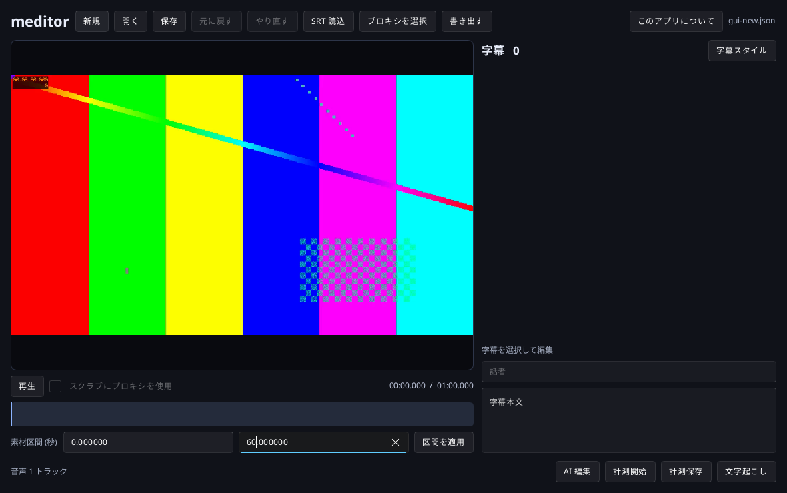
なぜ成功か
すべての確認点が期待値と一致しました。 ポインター・キー入力後の画面と、操作に伴う結果を照合する。
確認点 期待値 実際の値 結果 開いているファイル gui-new.json gui-new.json 成功 保存したWAVの本数 1 1 成功 区間編集後に「開く」を押す
- 終了を9秒にして区間を適用する
- 「開く」を押す
操作直後の画面原寸で開く ↗ なぜ成功か
すべての確認点が期待値と一致しました。 ポインター・キー入力後の画面と、操作に伴う結果を照合する。
確認点 期待値 実際の値 結果 未保存の確認が表示された はい はい 成功 未保存の確認をキャンセルする
- 「キャンセル」を押す
操作直後の画面原寸で開く ↗ なぜ成功か
すべての確認点が期待値と一致しました。 ポインター・キー入力後の画面と、操作に伴う結果を照合する。
確認点 期待値 実際の値 結果 未保存の確認が表示された いいえ いいえ 成功 編集は残っている 0.000000 – 9.000000 秒 0.000000 – 9.000000 秒 成功 編集を保存して別のプロジェクトを開く
- 「開く」を押し、「保存して続行」を選ぶ
- 別のプロジェクトを選ぶ
操作直後の画面原寸で開く ↗ なぜ成功か
すべての確認点が期待値と一致しました。 ポインター・キー入力後の画面と、操作に伴う結果を照合する。
確認点 期待値 実際の値 結果 開いているファイル fixture.json fixture.json 成功 保存した区間の終了 9000000 9000000 成功 未保存の編集を破棄して開き直す
- 区間を変更し、「開く」を押す
- 「変更を破棄」を押して同じファイルを選ぶ
操作直後の画面原寸で開く ↗ 
なぜ成功か
すべての確認点が期待値と一致しました。 ポインター・キー入力後の画面と、操作に伴う結果を照合する。
確認点 期待値 実際の値 結果 開き直した素材区間 0.000000 – 60.000000 秒 0.000000 – 60.000000 秒 成功 未保存の確認が表示された いいえ いいえ 成功 未保存の状態でウィンドウを閉じようとする
- ウィンドウに閉じる要求を送る
操作直後の画面原寸で開く ↗ 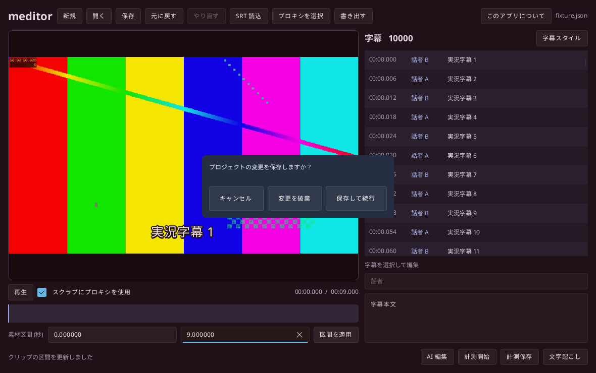
なぜ成功か
すべての確認点が期待値と一致しました。 ポインター・キー入力後の画面と、操作に伴う結果を照合する。
確認点 期待値 実際の値 結果 ウィンドウが表示されている はい はい 成功 未保存の確認が表示された はい はい 成功 終了を取り消して編集に戻る
- 「キャンセル」を押す
操作直後の画面原寸で開く ↗ なぜ成功か
すべての確認点が期待値と一致しました。 ポインター・キー入力後の画面と、操作に伴う結果を照合する。
確認点 期待値 実際の値 結果 未保存の確認が表示された いいえ いいえ 成功 編集が残る 0.000000 – 9.000000 秒 0.000000 – 9.000000 秒 成功
エディターのUI操作
再生・一時停止・シーク
画面検査の操作と結果
エディターにクリックとキー入力を送信して検査しています。OSのファイル選択には合成素材のパスを渡しています。
再生を開始する
- 「再生」を押す
操作直後の画面原寸で開く ↗ 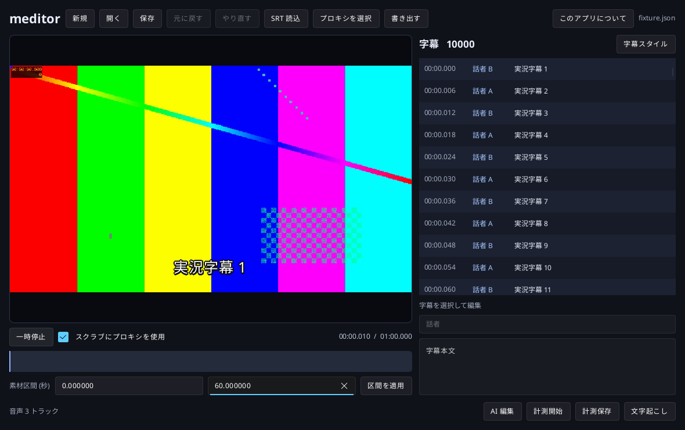
なぜ成功か
すべての確認点が期待値と一致しました。 ポインター・キー入力後の画面と、操作に伴う結果を照合する。
確認点 期待値 実際の値 結果 再生中 はい はい 成功 先頭から再生が進んだ はい はい 成功 再生を一時停止する
- 「一時停止」を押す
操作直後の画面原寸で開く ↗ なぜ成功か
すべての確認点が期待値と一致しました。 ポインター・キー入力後の画面と、操作に伴う結果を照合する。
確認点 期待値 実際の値 結果 再生中 いいえ いいえ 成功 再生位置が先頭より進んだ はい はい 成功 タイムラインの中央をクリックする
- タイムラインを中央でクリックする
操作直後の画面原寸で開く ↗ なぜ成功か
すべての確認点が期待値と一致しました。 ポインター・キー入力後の画面と、操作に伴う結果を照合する。
確認点 期待値 実際の値 結果 中央付近の再生位置 はい はい 成功 矢印キーで少しずつ移動する
- 右矢印、左矢印の順に押す
操作直後の画面原寸で開く ↗ 
なぜ成功か
すべての確認点が期待値と一致しました。 ポインター・キー入力後の画面と、操作に伴う結果を照合する。
確認点 期待値 実際の値 結果 右で先に進んだ はい はい 成功 左で元の位置に戻った はい はい 成功 EndとHomeで端に移動する
- Endで末尾へ移動し、Homeで先頭へ戻る
操作直後の画面原寸で開く ↗ なぜ成功か
すべての確認点が期待値と一致しました。 ポインター・キー入力後の画面と、操作に伴う結果を照合する。
確認点 期待値 実際の値 結果 末尾の時刻 60000000 60000000 成功 先頭の時刻 0 0 成功 タイムラインをドラッグする
- 中央から約75%の位置までドラッグして離す
操作直後の画面原寸で開く ↗ 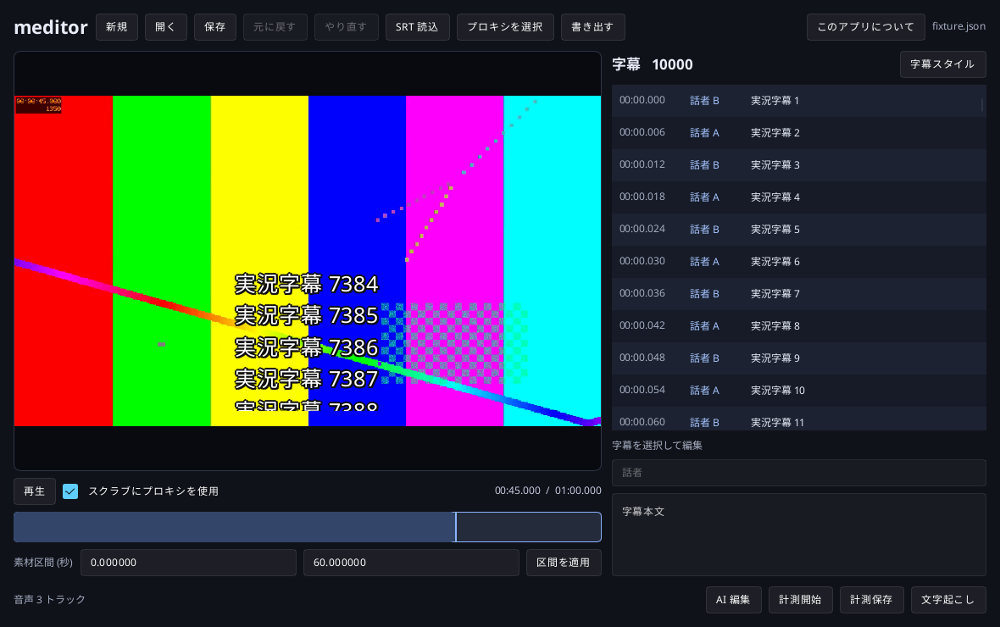
なぜ成功か
すべての確認点が期待値と一致しました。 ポインター・キー入力後の画面と、操作に伴う結果を照合する。
確認点 期待値 実際の値 結果 ドラッグ後の時刻が45秒付近 はい はい 成功 表示中のフレームがドラッグ先に一致 はい はい 成功
エディターのUI操作
SRTの取り込みと字幕一覧の操作
画面検査の操作と結果
エディターにクリックとキー入力を送信して検査しています。OSのファイル選択には合成素材のパスを渡しています。
SRTから字幕を取り込む
- 「SRT 読込」を押し、置き換えを許可してSRTを選ぶ
操作直後の画面原寸で開く ↗ 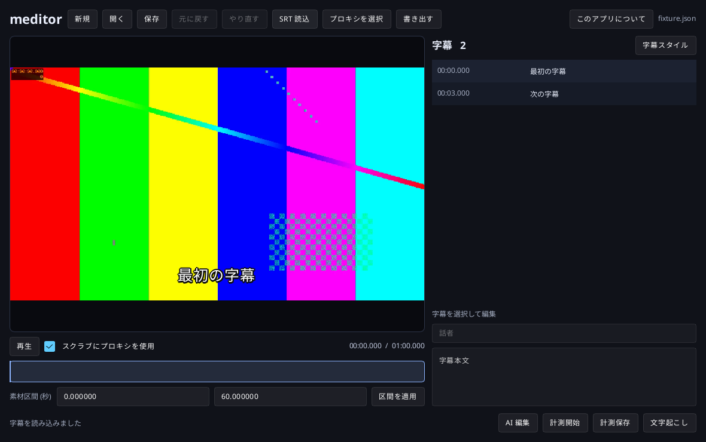
なぜ成功か
すべての確認点が期待値と一致しました。 ポインター・キー入力後の画面と、操作に伴う結果を照合する。
確認点 期待値 実際の値 結果 読み込みを示すメッセージ 字幕を読み込みました 字幕を読み込みました 成功 字幕の行数 2 2 成功 字幕の行をマウスとキーで選ぶ
- 先頭行をクリックし、下・上・End・Homeを押す
操作直後の画面原寸で開く ↗ なぜ成功か
すべての確認点が期待値と一致しました。 ポインター・キー入力後の画面と、操作に伴う結果を照合する。
確認点 期待値 実際の値 結果 クリック・下・上・End・Homeで選択した行 0,1,0,1,0 0,1,0,1,0 成功 Enterで選択した字幕へ移動する
- Endで最後の字幕を選び、Enterを押す
操作直後の画面原寸で開く ↗ なぜ成功か
すべての確認点が期待値と一致しました。 ポインター・キー入力後の画面と、操作に伴う結果を照合する。
確認点 期待値 実際の値 結果 再生位置（マイクロ秒） 3000000 3000000 成功 選択中の字幕の話者と本文を編集する
- 話者欄と本文欄に入力する
操作直後の画面原寸で開く ↗ 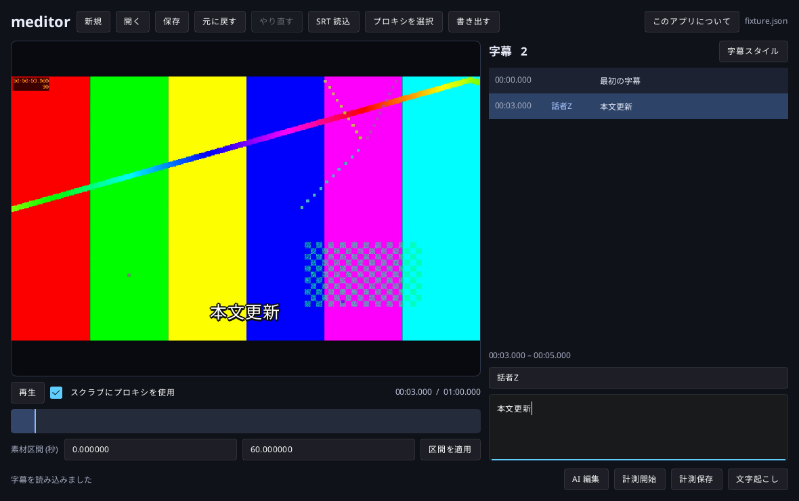
なぜ成功か
すべての確認点が期待値と一致しました。 ポインター・キー入力後の画面と、操作に伴う結果を照合する。
確認点 期待値 実際の値 結果 選択行の話者 話者Z 話者Z 成功 選択行の本文 本文更新 本文更新 成功 別の行の本文 最初の字幕 最初の字幕 成功 プレビューは本文だけ 本文更新 本文更新 成功 字幕の先頭行をダブルクリックする
- 先頭の字幕をダブルクリックする
操作直後の画面原寸で開く ↗ なぜ成功か
すべての確認点が期待値と一致しました。 ポインター・キー入力後の画面と、操作に伴う結果を照合する。
確認点 期待値 実際の値 結果 選択行 0 0 成功 字幕の開始位置に移動 0 0 成功 字幕の置き換えを拒否する
- SRT 読込を押し、確認では置き換えないを選ぶ
操作直後の画面原寸で開く ↗ 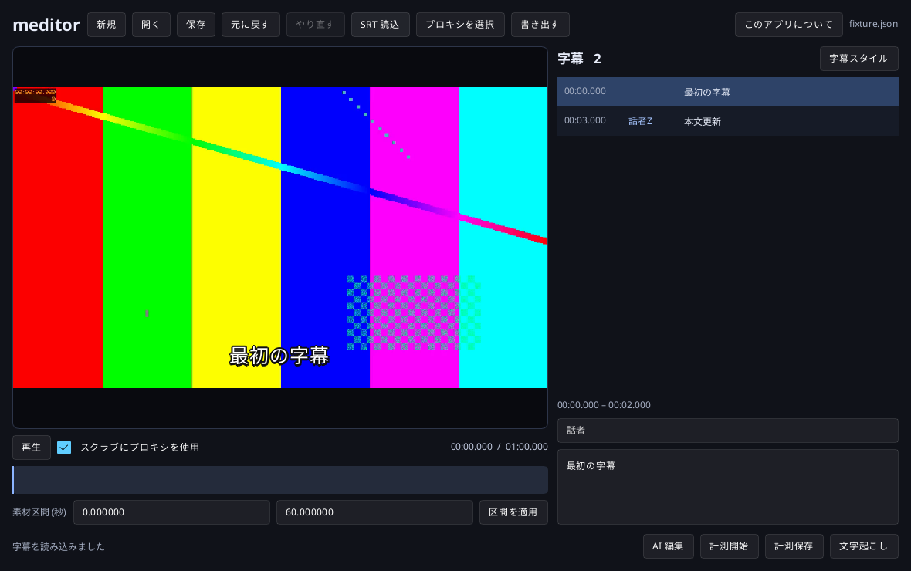
なぜ成功か
すべての確認点が期待値と一致しました。 ポインター・キー入力後の画面と、操作に伴う結果を照合する。
確認点 期待値 実際の値 結果 編集済みの字幕が残る 本文更新 本文更新 成功
エディターのUI操作
アプリ情報・AI・書き出し設定の開閉
画面検査の操作と結果
エディターにクリックとキー入力を送信して検査しています。OSのファイル選択には合成素材のパスを渡しています。
アプリ情報を開く
- 「このアプリについて」を押す
操作直後の画面原寸で開く ↗ 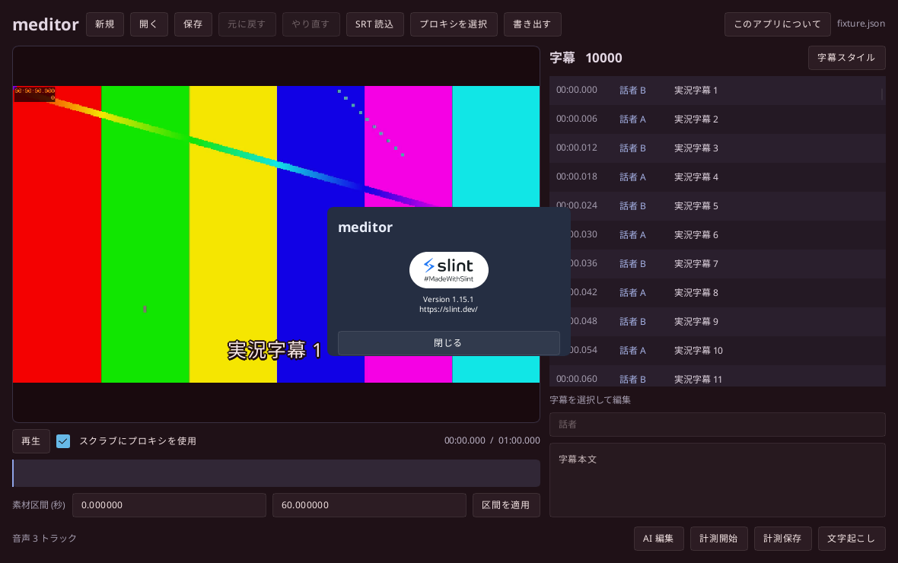
なぜ成功か
すべての確認点が期待値と一致しました。 ポインター・キー入力後の画面と、操作に伴う結果を照合する。
確認点 期待値 実際の値 結果 アプリ情報が開いている はい はい 成功 アプリ情報を閉じてAI編集を開く
- 「閉じる」を押す
- 「AI 編集」を押す
操作直後の画面原寸で開く ↗ なぜ成功か
すべての確認点が期待値と一致しました。 ポインター・キー入力後の画面と、操作に伴う結果を照合する。
確認点 期待値 実際の値 結果 アプリ情報が開いている いいえ いいえ 成功 AI編集が開いている はい はい 成功 AI編集を閉じて書き出し設定を開く
- 「AI 編集を閉じる」を押す
- 「書き出す」を押す
操作直後の画面原寸で開く ↗ 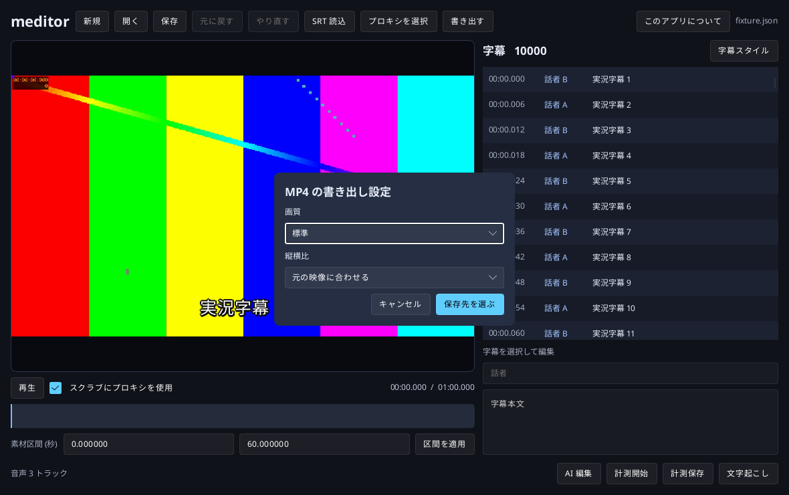
なぜ成功か
すべての確認点が期待値と一致しました。 ポインター・キー入力後の画面と、操作に伴う結果を照合する。
確認点 期待値 実際の値 結果 AI編集が開いている いいえ いいえ 成功 書き出し設定が画面に出ている はい はい 成功 書き出し設定をキャンセルする
- 書き出し設定の「キャンセル」を押す
操作直後の画面原寸で開く ↗ なぜ成功か
すべての確認点が期待値と一致しました。 ポインター・キー入力後の画面と、操作に伴う結果を照合する。
確認点 期待値 実際の値 結果 書き出し設定が画面に出ている いいえ いいえ 成功 書き出し処理中 いいえ いいえ 成功 不正な字幕色を拒否する
- 文字色に不正な値を入力して適用する
操作直後の画面原寸で開く ↗ 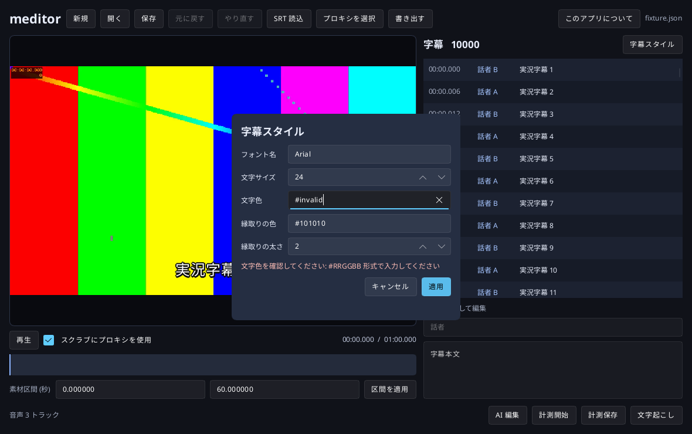
なぜ成功か
すべての確認点が期待値と一致しました。 ポインター・キー入力後の画面と、操作に伴う結果を照合する。
確認点 期待値 実際の値 結果 不正な色に対するエラー 文字色を確認してください: #RRGGBB 形式で入力してください 文字色を確認してください: #RRGGBB 形式で入力してください 成功 字幕の変更をキャンセルする
- キャンセルを押す
操作直後の画面原寸で開く ↗ 
なぜ成功か
すべての確認点が期待値と一致しました。 ポインター・キー入力後の画面と、操作に伴う結果を照合する。
確認点 期待値 実際の値 結果 プレビューの文字色は白のまま はい はい 成功
エディターのUI操作
プロキシの選択と切り替え
画面検査の操作と結果
エディターにクリックとキー入力を送信して検査しています。OSのファイル選択には合成素材のパスを渡しています。
プロキシを選ぶ
- 「プロキシを選択」を押し、合成プロキシを選ぶ
操作直後の画面原寸で開く ↗ なぜ成功か
すべての確認点が期待値と一致しました。 ポインター・キー入力後の画面と、操作に伴う結果を照合する。
確認点 期待値 実際の値 結果 選択前はプロキシがない はい はい 成功 プロジェクトに選択したファイルを設定した はい はい 成功 プロキシを使う はい はい 成功 プロキシ使用を切り替える
- 「スクラブにプロキシを使用」のチェックを切り替える
操作直後の画面原寸で開く ↗ なぜ成功か
すべての確認点が期待値と一致しました。 ポインター・キー入力後の画面と、操作に伴う結果を照合する。
確認点 期待値 実際の値 結果 プロキシを使う いいえ いいえ 成功 プロキシ使用を切り替える
- 「スクラブにプロキシを使用」のチェックを切り替える
操作直後の画面原寸で開く ↗ なぜ成功か
すべての確認点が期待値と一致しました。 ポインター・キー入力後の画面と、操作に伴う結果を照合する。
確認点 期待値 実際の値 結果 プロキシを使う はい はい 成功
エディターのUI操作
計測の開始・停止・保存
画面検査の操作と結果
エディターにクリックとキー入力を送信して検査しています。OSのファイル選択には合成素材のパスを渡しています。
計測を開始する
- 「計測開始」を押す
操作直後の画面原寸で開く ↗ なぜ成功か
すべての確認点が期待値と一致しました。 ポインター・キー入力後の画面と、操作に伴う結果を照合する。
確認点 期待値 実際の値 結果 計測中 はい はい 成功 計測を停止する
- タイムラインを操作して「計測停止」を押す
操作直後の画面原寸で開く ↗ 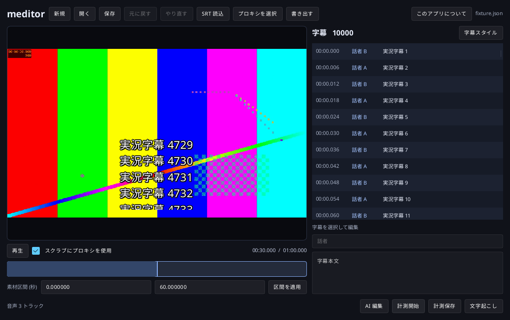
なぜ成功か
すべての確認点が期待値と一致しました。 ポインター・キー入力後の画面と、操作に伴う結果を照合する。
確認点 期待値 実際の値 結果 計測中 いいえ いいえ 成功 計測結果をJSONに保存する
- 「計測保存」を押して保存先を指定する
操作直後の画面原寸で開く ↗ なぜ成功か
すべての確認点が期待値と一致しました。 ポインター・キー入力後の画面と、操作に伴う結果を照合する。
確認点 期待値 実際の値 結果 保存完了メッセージ 計測ファイルを保存しました 計測ファイルを保存しました 成功 計測イベントを含む はい はい 成功
エディターのUI操作
書き出し設定の選択とMP4保存
画面検査の操作と結果
エディターにクリックとキー入力を送信して検査しています。OSのファイル選択には合成素材のパスを渡しています。
画質と縦長キャンバスを選ぶ
- 書き出すを押し、「高画質」と「縦長 9:16」を選ぶ
操作直後の画面原寸で開く ↗ 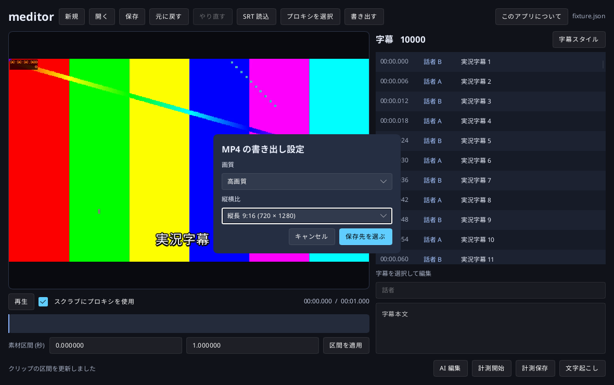
なぜ成功か
すべての確認点が期待値と一致しました。 ポインター・キー入力後の画面と、操作に伴う結果を照合する。
確認点 期待値 実際の値 結果 書き出し設定が開いている はい はい 成功 MP4の保存先を指定する
- 保存先を選ぶボタンを押し、保存先を指定する
- 書き出し中に終了時刻を2秒へ変更する
操作直後の画面原寸で開く ↗ なぜ成功か
すべての確認点が期待値と一致しました。 ポインター・キー入力後の画面と、操作に伴う結果を照合する。
確認点 期待値 実際の値 結果 書き出しを開始した はい はい 成功 高画質と縦長が書き出しに渡る はい はい 成功 編集画面の新しい素材区間 2000000 2000000 成功 生成したMP4の寸法と音声を照合する
- 書き出しの完了を待つ
操作直後の画面原寸で開く ↗ なぜ成功か
すべての確認点が期待値と一致しました。 ポインター・キー入力後の画面と、操作に伴う結果を照合する。
確認点 期待値 実際の値 結果 最初のMP4は編集前の長さ約1秒 はい はい 成功 縦長の寸法720×1280 はい はい 成功 音声ストリームを含む はい はい 成功 書き出し完了の画面表示 はい はい 成功 失敗する保存先で書き出す
- 存在しないフォルダの保存先を選ぶ
操作直後の画面原寸で開く ↗ 
なぜ成功か
すべての確認点が期待値と一致しました。 ポインター・キー入力後の画面と、操作に伴う結果を照合する。
確認点 期待値 実際の値 結果 書き出しを開始した はい はい 成功 失敗を表示し、書き出し中の状態を解除する
- 終了を待つ
操作直後の画面原寸で開く ↗ なぜ成功か
すべての確認点が期待値と一致しました。 ポインター・キー入力後の画面と、操作に伴う結果を照合する。
確認点 期待値 実際の値 結果 画面に失敗理由が表示された はい はい 成功 書き出しが終わった はい はい 成功 書き出し失敗後も編集を続ける
- 終了を3秒に変え、区間を適用する
操作直後の画面原寸で開く ↗ 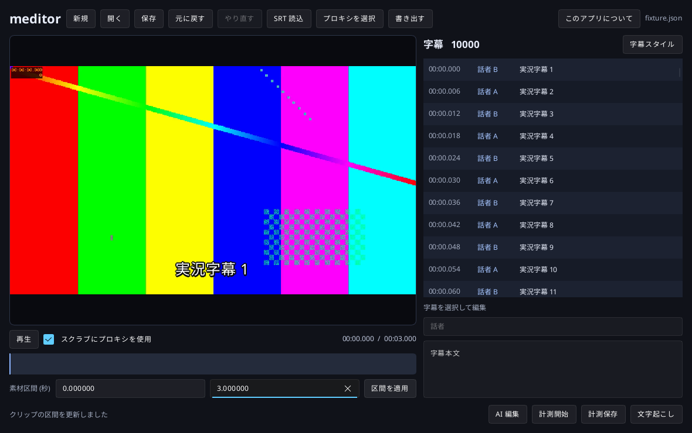
なぜ成功か
すべての確認点が期待値と一致しました。 ポインター・キー入力後の画面と、操作に伴う結果を照合する。
確認点 期待値 実際の値 結果 区間の変更が反映される 3000000 3000000 成功 別の保存先で書き出しを再試行する
- 失敗後に行った最後の編集をUndoし、書き出すを押して容量優先・横長を選び、新しい保存先を指定する
操作直後の画面原寸で開く ↗ なぜ成功か
すべての確認点が期待値と一致しました。 ポインター・キー入力後の画面と、操作に伴う結果を照合する。
確認点 期待値 実際の値 結果 再試行が始まった はい はい 成功 容量優先と横長が書き出しに渡る はい はい 成功 後から行った編集が次のMP4に反映される
- 書き出し完了を待つ
操作直後の画面原寸で開く ↗ なぜ成功か
すべての確認点が期待値と一致しました。 ポインター・キー入力後の画面と、操作に伴う結果を照合する。
確認点 期待値 実際の値 結果 再試行のMP4は書き出し中に編集した長さ約2秒 はい はい 成功 再試行の完了が表示された はい はい 成功
エディターのUI操作
ローカル文字起こしの開始・中止・保存
画面検査の操作と結果
エディターにクリックとキー入力を送信して検査しています。OSのファイル選択には合成素材のパスを渡しています。
文字起こしエンジンはSRTを返すテスト用CLIです。実モデルの認識精度は検査範囲に含みません。
合成エンジンで文字起こしを開始する
- 「文字起こし」を押し、テスト用のCLI、モデル、WAV、SRT保存先を選ぶ
操作直後の画面原寸で開く ↗ なぜ成功か
すべての確認点が期待値と一致しました。 ポインター・キー入力後の画面と、操作に伴う結果を照合する。
確認点 期待値 実際の値 結果 文字起こしを開始した はい はい 成功 文字起こしを中止する
- 「文字起こしを中止」を押す
操作直後の画面原寸で開く ↗ なぜ成功か
すべての確認点が期待値と一致しました。 ポインター・キー入力後の画面と、操作に伴う結果を照合する。
確認点 期待値 実際の値 結果 中止を受け付けた はい はい 成功 中止が完了し出力が残らないことを確認する
- 中止の完了を待つ
操作直後の画面原寸で開く ↗ なぜ成功か
すべての確認点が期待値と一致しました。 ポインター・キー入力後の画面と、操作に伴う結果を照合する。
確認点 期待値 実際の値 結果 中止したSRTが存在する いいえ いいえ 成功 中止完了の画面表示 文字起こしを中止しました 文字起こしを中止しました 成功 合成エンジンで文字起こしを開始する
- 「文字起こし」を押し、テスト用のCLI、モデル、WAV、SRT保存先を選ぶ
操作直後の画面原寸で開く ↗ なぜ成功か
すべての確認点が期待値と一致しました。 ポインター・キー入力後の画面と、操作に伴う結果を照合する。
確認点 期待値 実際の値 結果 文字起こしを開始した はい はい 成功 SRTに合成の字幕がある はい はい 成功 SRT保存完了の画面表示 はい はい 成功
エディターのUI操作
合成AI応答の適用・設定確認・中断
画面検査の操作と結果
エディターにクリックとキー入力を送信して検査しています。OSのファイル選択には合成素材のパスを渡しています。
アプリ内のAI結果は合成応答で再現しています。実アカウントへの接続とモデルの回答品質は検査範囲に含みません。
空欄のままAI編集を送信できないことを確認する
- AI 編集を開き、空のまま送信位置を押す
操作直後の画面原寸で開く ↗ 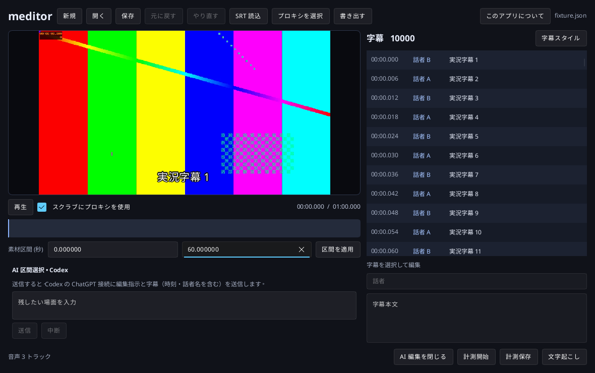
なぜ成功か
すべての確認点が期待値と一致しました。 ポインター・キー入力後の画面と、操作に伴う結果を照合する。
確認点 期待値 実際の値 結果 処理は始まらない はい はい 成功 入力した指示を合成AIに送信する
- 指示を入力して「送信」を押す
操作直後の画面原寸で開く ↗ 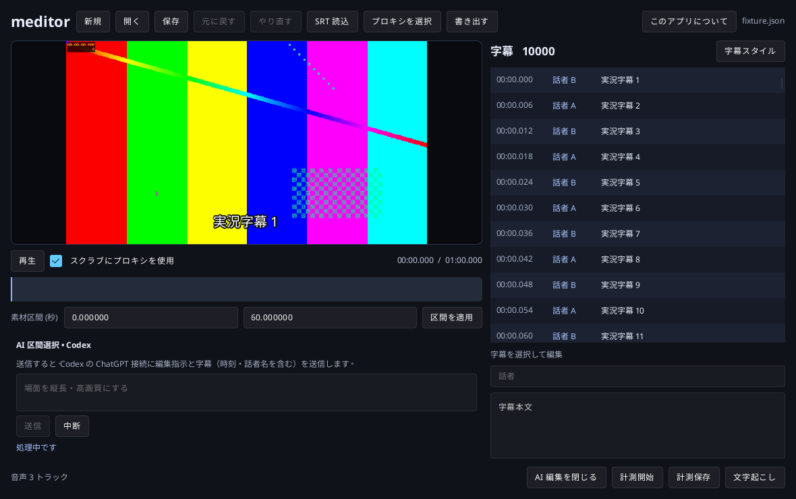
なぜ成功か
すべての確認点が期待値と一致しました。 ポインター・キー入力後の画面と、操作に伴う結果を照合する。
確認点 期待値 実際の値 結果 AI処理中 はい はい 成功 中断できる はい はい 成功 合成応答のクリップが画面に反映される
- 応答を待つ
操作直後の画面原寸で開く ↗ なぜ成功か
すべての確認点が期待値と一致しました。 ポインター・キー入力後の画面と、操作に伴う結果を照合する。
確認点 期待値 実際の値 結果 素材区間 8.000000 – 11.000000 秒 8.000000 – 11.000000 秒 成功 書き出し設定の確認が可能 はい はい 成功 AIが提案した書き出し設定を確認する
- 「書き出し設定を確認」を押す
操作直後の画面原寸で開く ↗ 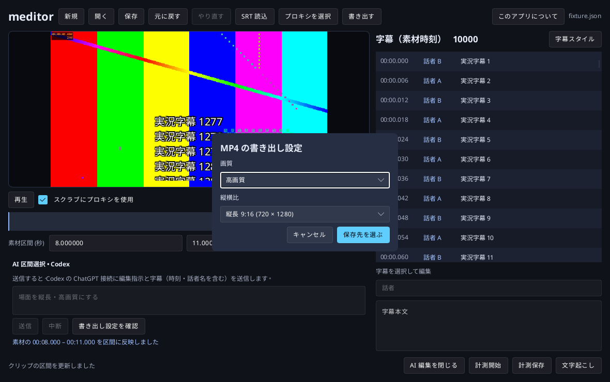
なぜ成功か
すべての確認点が期待値と一致しました。 ポインター・キー入力後の画面と、操作に伴う結果を照合する。
確認点 期待値 実際の値 結果 書き出し設定の表示 はい はい 成功 高画質と縦長が選択される 1,2 1,2 成功 書き出しが始まっている いいえ いいえ 成功 AIの提案を変更して書き出す
- 一度キャンセルして設定を開き直す
- 標準画質と横長を選び、保存先を指定する
操作直後の画面原寸で開く ↗ 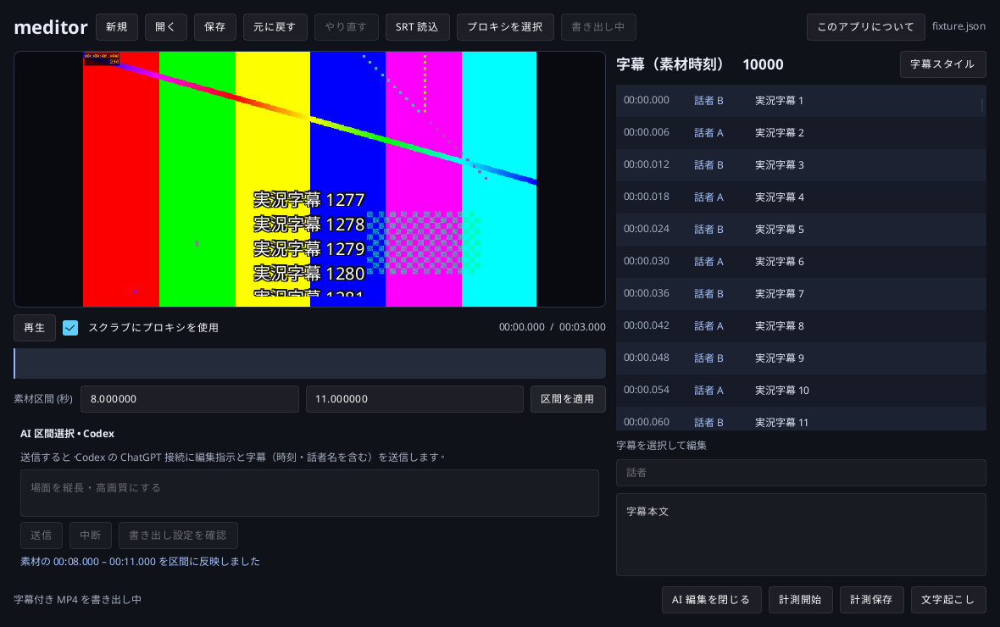
なぜ成功か
すべての確認点が期待値と一致しました。 ポインター・キー入力後の画面と、操作に伴う結果を照合する。
確認点 期待値 実際の値 結果 変更した標準と横長が書き出しに渡る はい はい 成功 AIが選んだ区間を変更後の設定で保存する
- 出力完了を待つ
操作直後の画面原寸で開く ↗ 
なぜ成功か
すべての確認点が期待値と一致しました。 ポインター・キー入力後の画面と、操作に伴う結果を照合する。
確認点 期待値 実際の値 結果 AIが選んだ区間の長さ約3秒 はい はい 成功 提案から変更した横長1280×720 はい はい 成功 提案を適用前に戻し、2回目の送信を始める
- 設定をキャンセルしてUndoし、新しい指示を送る
操作直後の画面原寸で開く ↗ 
なぜ成功か
すべての確認点が期待値と一致しました。 ポインター・キー入力後の画面と、操作に伴う結果を照合する。
確認点 期待値 実際の値 結果 元の区間になっている 0.000000 – 60.000000 秒 0.000000 – 60.000000 秒 成功 AI処理中 はい はい 成功 処理中のAIを中断する
- 「中断」を押す
操作直後の画面原寸で開く ↗ 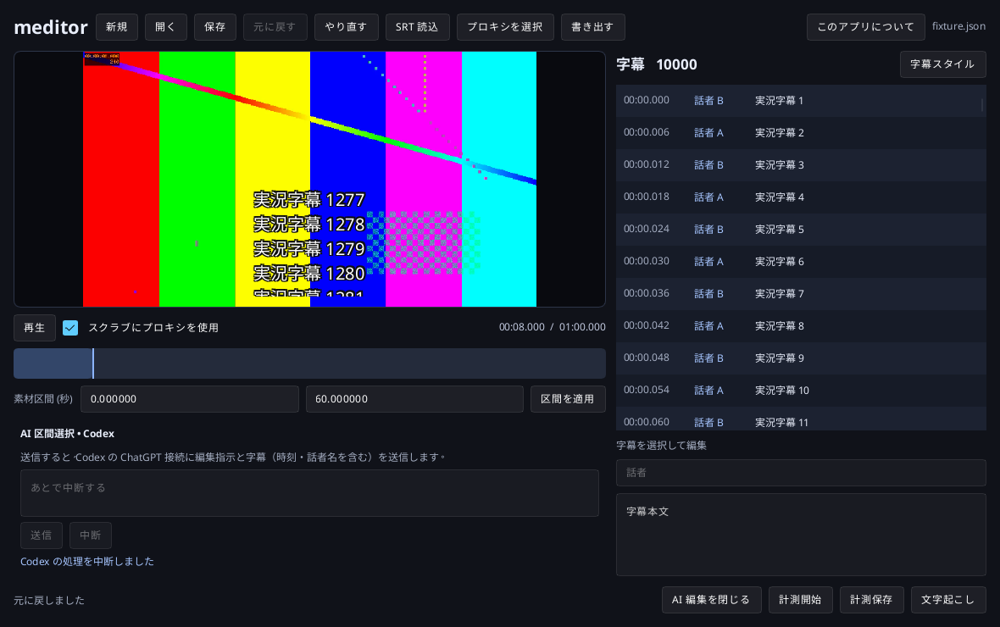
なぜ成功か
すべての確認点が期待値と一致しました。 ポインター・キー入力後の画面と、操作に伴う結果を照合する。
確認点 期待値 実際の値 結果 中断の表示 Codex の処理を中断しました Codex の処理を中断しました 成功 中断後に字幕と区間を保持する
- 終了を待って画面を確認する
操作直後の画面原寸で開く ↗ なぜ成功か
すべての確認点が期待値と一致しました。 ポインター・キー入力後の画面と、操作に伴う結果を照合する。
確認点 期待値 実際の値 結果 素材区間 0.000000 – 60.000000 秒 0.000000 – 60.000000 秒 成功 字幕の行数 10000 10000 成功 AI処理中 いいえ いいえ 成功
エディターのUI操作
AIの該当なし・無効応答・失敗の表示
画面検査の操作と結果
エディターにクリックとキー入力を送信して検査しています。OSのファイル選択には合成素材のパスを渡しています。
エラーを返す合成応答で、アプリによる表示と編集内容の保持を確認します。
該当する区間がない場合
- 編集指示を送って応答を待つ
操作直後の画面原寸で開く ↗ 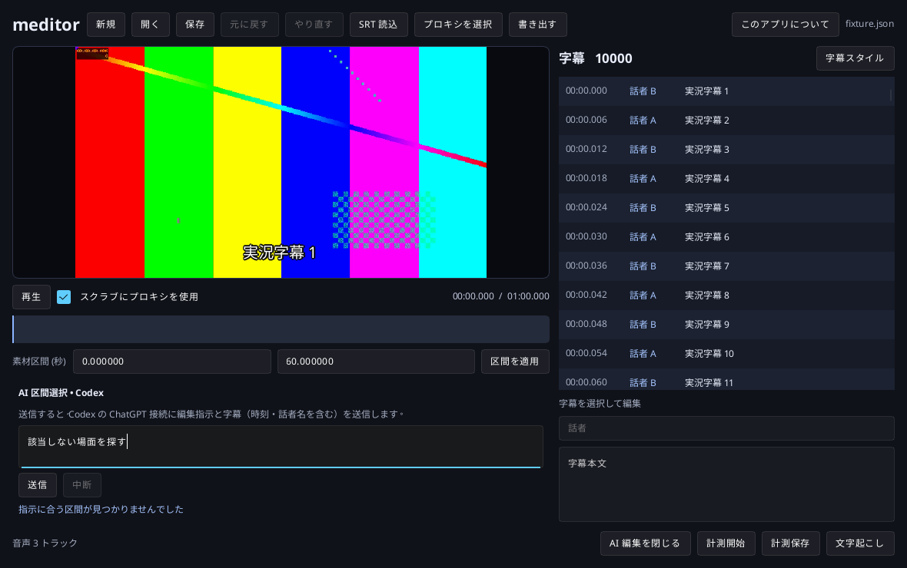
なぜ成功か
すべての確認点が期待値と一致しました。 ポインター・キー入力後の画面と、操作に伴う結果を照合する。
確認点 期待値 実際の値 結果 処理を開始した はい はい 成功 応答結果の画面表示 指示に合う区間が見つかりませんでした 指示に合う区間が見つかりませんでした 成功 素材区間が維持されている 0.000000 – 60.000000 秒 0.000000 – 60.000000 秒 成功 素材の範囲外の応答を拒否する
- 編集指示を送って応答を待つ
操作直後の画面原寸で開く ↗ なぜ成功か
すべての確認点が期待値と一致しました。 ポインター・キー入力後の画面と、操作に伴う結果を照合する。
確認点 期待値 実際の値 結果 処理を開始した はい はい 成功 応答結果の画面表示 AI が対象区間外の時刻を返しました AI が対象区間外の時刻を返しました 成功 素材区間が維持されている 0.000000 – 60.000000 秒 0.000000 – 60.000000 秒 成功 AI処理の失敗を表示する
- 編集指示を送って応答を待つ
操作直後の画面原寸で開く ↗ なぜ成功か
すべての確認点が期待値と一致しました。 ポインター・キー入力後の画面と、操作に伴う結果を照合する。
確認点 期待値 実際の値 結果 処理を開始した はい はい 成功 応答結果の画面表示 合成応答でAI処理に失敗しました 合成応答でAI処理に失敗しました 成功 素材区間が維持されている 0.000000 – 60.000000 秒 0.000000 – 60.000000 秒 成功 区間設定後のプロジェクトでAI送信を止める
- 区間を設定してから送信位置を押す
操作直後の画面原寸で開く ↗ 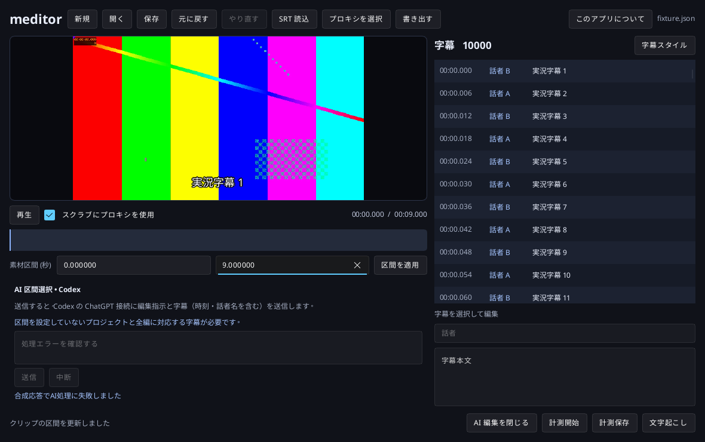
なぜ成功か
すべての確認点が期待値と一致しました。 ポインター・キー入力後の画面と、操作に伴う結果を照合する。
確認点 期待値 実際の値 結果 AI区間選択に使える素材 いいえ いいえ 成功 新しいAI処理が起動した いいえ いいえ 成功 編集中のAIに応答待ちの状態を作る
- 合成応答への送信を始める
操作直後の画面原寸で開く ↗ なぜ成功か
すべての確認点が期待値と一致しました。 ポインター・キー入力後の画面と、操作に伴う結果を照合する。
確認点 期待値 実際の値 結果 AI処理が始まった はい はい 成功 AI応答待ちに字幕を書き換える
- 最初の字幕の本文を編集する
- 待っていた応答の処理が終わるのを待つ
操作直後の画面原寸で開く ↗ 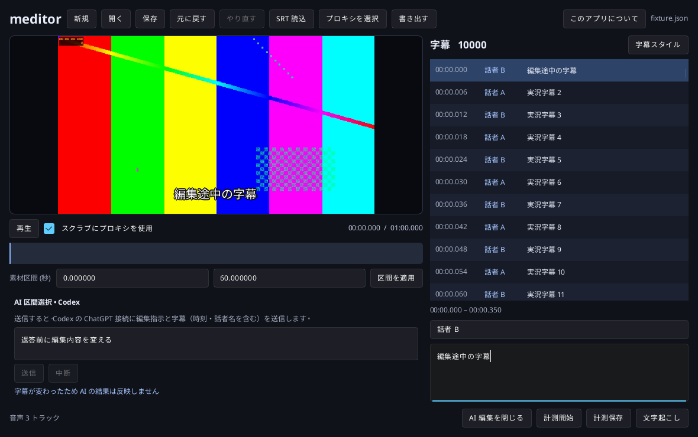
なぜ成功か
すべての確認点が期待値と一致しました。 ポインター・キー入力後の画面と、操作に伴う結果を照合する。
確認点 期待値 実際の値 結果 書き換えた字幕 編集途中の字幕 編集途中の字幕 成功 後から届いたAIの区間が反映されていない 0.000000 – 60.000000 秒 0.000000 – 60.000000 秒 成功 AI処理が終了した はい はい 成功 編集中のAIに応答待ちの状態を作る
- 合成応答への送信を始める
操作直後の画面原寸で開く ↗ 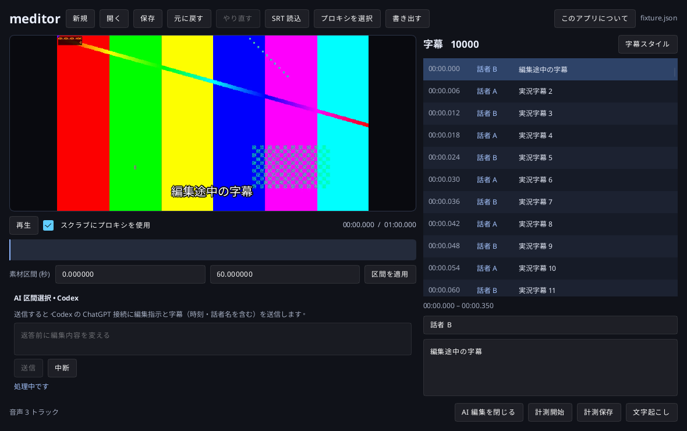
なぜ成功か
すべての確認点が期待値と一致しました。 ポインター・キー入力後の画面と、操作に伴う結果を照合する。
確認点 期待値 実際の値 結果 AI処理が始まった はい はい 成功 AI応答待ちにプロジェクトを開き直す
- 開くを押し、変更を破棄して合成プロジェクトを開く
操作直後の画面原寸で開く ↗ なぜ成功か
すべての確認点が期待値と一致しました。 ポインター・キー入力後の画面と、操作に伴う結果を照合する。
確認点 期待値 実際の値 結果 開き直したプロジェクトの字幕 実況字幕 1 実況字幕 1 成功 後から届いたAIの区間が反映されていない 0.000000 – 60.000000 秒 0.000000 – 60.000000 秒 成功 AI処理が終了した はい はい 成功
エディターのUI操作
字幕と縁取りをプレビューとMP4の画素で確認する
画面検査の操作と結果
エディターにクリックとキー入力を送信して検査しています。OSのファイル選択には合成素材のパスを渡しています。
同じ時刻の2つの字幕をプレビューで確認する
- 白と青の合成映像に話者Aと話者Bの字幕を重ねて開く
操作直後の画面原寸で開く ↗ 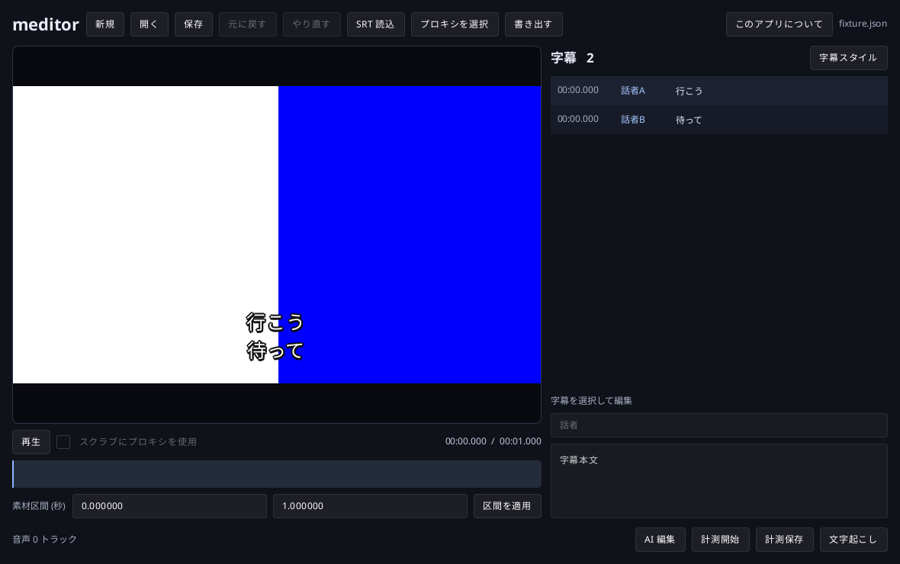
なぜ成功か
すべての確認点が期待値と一致しました。 字幕の周囲にある映像色と、実際に描かれた文字・縁取りの画素を確認する。
確認点 期待値 実際の値 結果 プレビューの字幕には本文だけがある 行こう 待って 行こう 待って 成功 字幕一覧の話者は区別される 話者A,話者B 話者A,話者B 成功 字幕の周囲に白と青の映像が見える はい はい 成功 文字色と縁取りを適用し、プレビューの画素を照合する
- フォントをNoto Sans CJK JP、文字サイズを30にする
- 黄色の文字と緑の太い縁取りを適用する
操作直後の画面原寸で開く ↗ 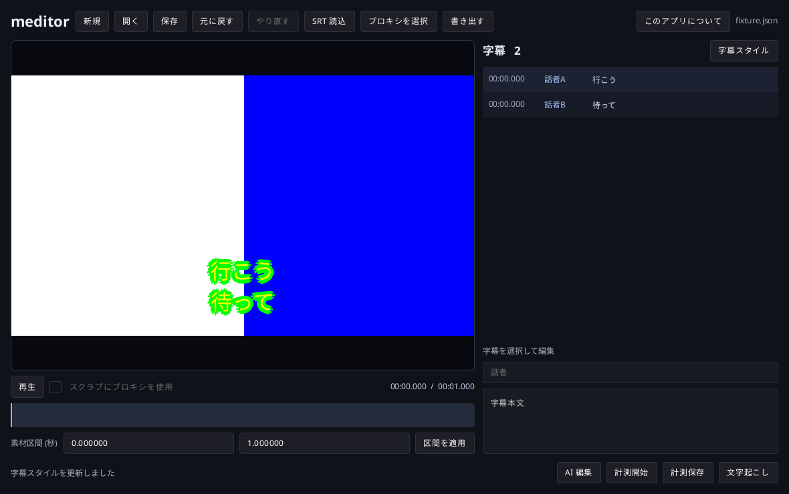
なぜ成功か
すべての確認点が期待値と一致しました。 字幕の周囲にある映像色と、実際に描かれた文字・縁取りの画素を確認する。
確認点 期待値 実際の値 結果 プレビューの字幕には本文だけがある 行こう 待って 行こう 待って 成功 字幕一覧の話者は区別される 話者A,話者B 話者A,話者B 成功 字幕の周囲に白と青の映像が見える はい はい 成功 適用したフォント名と文字サイズ Noto Sans CJK JP,30 Noto Sans CJK JP,30 成功 プレビューに黄色と緑の字幕画素がある はい はい 成功 書き出しを開始してから字幕を編集する
- 元の字幕でMP4への出力を開始し、1行目を長い字幕に変更する
操作直後の画面原寸で開く ↗ 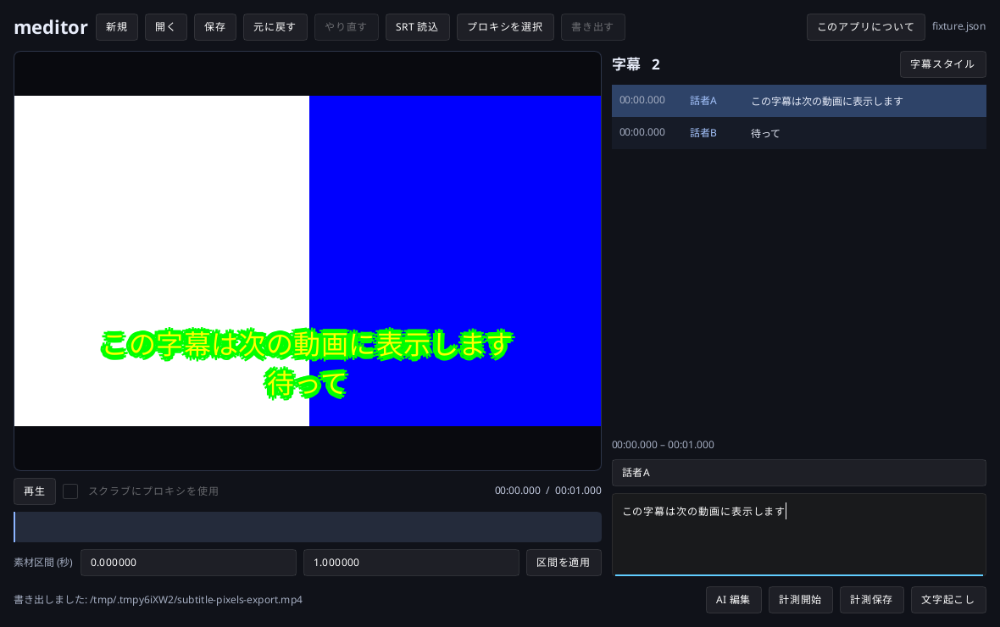
なぜ成功か
すべての確認点が期待値と一致しました。 字幕の周囲にある映像色と、実際に描かれた文字・縁取りの画素を確認する。
確認点 期待値 実際の値 結果 MP4を生成した はい はい 成功 MP4に黄色と緑の字幕画素がある はい はい 成功 MP4の字幕の周囲にも白と青の映像が見える はい はい 成功 編集後の字幕がエディターに残る はい はい 成功 進行中のMP4は元の短い字幕の画素を保持 はい はい 成功 編集後の字幕で2本目を書き出す
- 編集した状態から、別のMP4に出力する
操作直後の画面原寸で開く ↗ なぜ成功か
すべての確認点が期待値と一致しました。 字幕の周囲にある映像色と、実際に描かれた文字・縁取りの画素を確認する。
確認点 期待値 実際の値 結果 MP4を生成した はい はい 成功 MP4に黄色と緑の字幕画素がある はい はい 成功 MP4の字幕の周囲にも白と青の映像が見える はい はい 成功 編集後の字幕がエディターに残る はい はい 成功 2本目のMP4に変更後の長い字幕が表示される はい はい 成功
AI による実況動画の切り出しと GUI での修正
編集指示に合う発話を含む区間を AI が選ぶ
Gherkinの手順
docs/features/ai-clip-editing.feature:9
背景前提 90 秒の実況動画と対応するゲーム音・話者音声がプロジェクトから参照できる
前提 配置先のタイムラインは空である
かつ 次の発話が素材時刻に対応付けられた文字起こし結果にある
発話 素材時刻の開始秒 素材時刻の終了秒 最初のボスは思ったより強かった 33 36 二番目のボスは楽に倒せた 62 65 もし 制作者が「最初のボス戦の感想を残したい」と AI に編集を依頼する
ならば タイムラインの先頭にクリップが一つ配置される
かつ クリップの素材区間は 33 秒から 36 秒までの発話全体を含む
かつ クリップの素材区間と素材時刻 62 秒から 65 秒までの区間の重なりは 0 秒である
AI による実況動画の切り出しと GUI での修正
AI が選んだ素材区間が編集可能なクリップになる
Gherkinの手順
docs/features/ai-clip-editing.feature:20
背景前提 90 秒の実況動画と対応するゲーム音・話者音声がプロジェクトから参照できる
前提 配置先のタイムラインは空である
かつ 素材時刻に対応付けられた文字起こし結果が参照できる
かつ 編集指示を受けた AI が素材時刻 30 秒から 40 秒までを選ぶ
かつ ゲーム音のオフセットは 0 秒で、話者音声のオフセットはプラス 2 秒である
もし 制作者が AI に編集を依頼し、処理が完了する
ならば GUI で編集結果が適用済みと分かる
かつ タイムライン時刻 0 秒から 10 秒までに一つの編集可能なクリップがある
かつ タイムライン時刻 3 秒で動画とゲーム音の素材時刻 33 秒および話者音声の素材時刻 31 秒が同期して再生される
AI による実況動画の切り出しと GUI での修正
GUI でクリップの開始を調整して保存する
画面検査の操作と結果
エディターにクリックとキー入力を送信して検査しています。OSのファイル選択には合成素材のパスを渡しています。
画面検査の対象は素材区間、タイムラインの長さ、保存後の復元です。音声同期は別途確認が必要です。
素材区間を設定済みのプロジェクトを開く
- 素材区間を設定した合成プロジェクトを開く
操作直後の画面原寸で開く ↗ なぜ成功か
すべての確認点が期待値と一致しました。 素材の開始・終了と先頭の再生位置、区間の長さで、変更前の状態を確認する。
確認点 期待値 実際の値 結果 素材区間 30.000000 – 40.000000 秒 30.000000 – 40.000000 秒 成功 再生位置 ／ 区間の長さ 00:00.000 / 00:10.000 00:00.000 / 00:10.000 成功 クリップの開始を32秒に変更する
- 開始に「32」を入力して「区間を適用」を押す
操作直後の画面原寸で開く ↗ なぜ成功か
すべての確認点が期待値と一致しました。 素材区間の開始だけが32秒に移動し、タイムラインの長さが8秒になる。
確認点 期待値 実際の値 結果 素材区間 32.000000 – 40.000000 秒 32.000000 – 40.000000 秒 成功 再生位置 ／ 区間の長さ 00:00.000 / 00:08.000 00:00.000 / 00:08.000 成功 区間の変更を保存して開き直す
- 「保存」を押す
- 保存したプロジェクトを開き直す
操作直後の画面原寸で開く ↗ なぜ成功か
すべての確認点が期待値と一致しました。 保存完了の表示が出て、開き直しても32〜40秒の区間と8秒の長さが維持される。
確認点 期待値 実際の値 結果 素材区間 32.000000 – 40.000000 秒 32.000000 – 40.000000 秒 成功 再生位置 ／ 区間の長さ 00:00.000 / 00:08.000 00:00.000 / 00:08.000 成功 保存結果 プロジェクトを保存しました プロジェクトを保存しました 成功
Gherkinの手順
docs/features/ai-clip-editing.feature:30
背景前提 90 秒の実況動画と対応するゲーム音・話者音声がプロジェクトから参照できる
前提 AI の編集結果として素材時刻 30 秒から 40 秒までのクリップがタイムライン時刻 0 秒にある
かつ ゲーム音のオフセットは 0 秒で、話者音声のオフセットはプラス 2 秒である
もし 制作者が GUI でクリップの開始を素材時刻 32 秒に調整する
ならば クリップはタイムライン時刻 0 秒から 8 秒までになる
かつ タイムライン時刻 1 秒で動画とゲーム音の素材時刻 33 秒および話者音声の素材時刻 31 秒が同期して再生される
もし 制作者がプロジェクトを保存して開き直す
ならば 素材時刻 32 秒から 40 秒までのクリップがタイムライン時刻 0 秒に復元される
AI による実況動画の切り出しと GUI での修正
GUI でクリップの終了を調整する
画面検査の操作と結果
エディターにクリックとキー入力を送信して検査しています。OSのファイル選択には合成素材のパスを渡しています。
素材区間をあらかじめ設定した合成プロジェクトで、終了位置とタイムラインの長さを確認します。
素材区間を設定済みのプロジェクトを開く
- 素材区間を設定した合成プロジェクトを開く
操作直後の画面原寸で開く ↗ なぜ成功か
すべての確認点が期待値と一致しました。 素材の開始・終了と先頭の再生位置、区間の長さで、変更前の状態を確認する。
確認点 期待値 実際の値 結果 素材区間 30.000000 – 40.000000 秒 30.000000 – 40.000000 秒 成功 再生位置 ／ 区間の長さ 00:00.000 / 00:10.000 00:00.000 / 00:10.000 成功 クリップの終了を38秒に変更する
- 終了に「38」を入力して「区間を適用」を押す
操作直後の画面原寸で開く ↗ 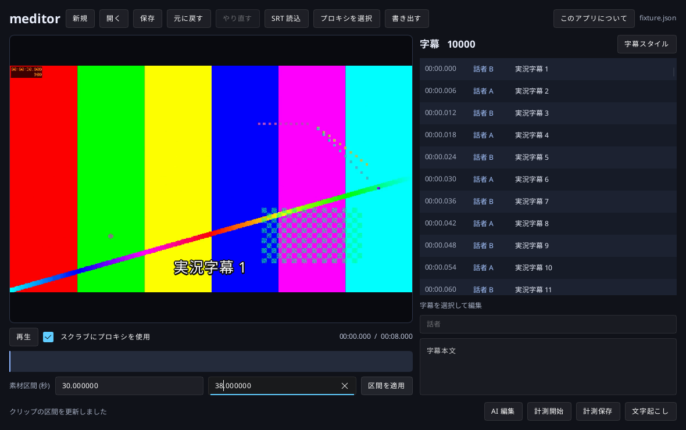
なぜ成功か
すべての確認点が期待値と一致しました。 素材区間の開始は30秒のまま、終了が38秒になり、タイムラインの長さが8秒になる。
確認点 期待値 実際の値 結果 素材区間 30.000000 – 38.000000 秒 30.000000 – 38.000000 秒 成功 再生位置 ／ 区間の長さ 00:00.000 / 00:08.000 00:00.000 / 00:08.000 成功
Gherkinの手順
docs/features/ai-clip-editing.feature:39
背景前提 90 秒の実況動画と対応するゲーム音・話者音声がプロジェクトから参照できる
前提 AI の編集結果として素材時刻 30 秒から 40 秒までのクリップがタイムライン時刻 0 秒にある
もし 制作者が GUI でクリップの終了を素材時刻 38 秒に調整する
ならば 素材時刻 30 秒から 38 秒までのクリップがタイムライン時刻 0 秒から 8 秒までを占める
AI による実況動画の切り出しと GUI での修正
無効な素材区間への GUI 編集は修正前のクリップを保持する
画面検査の操作と結果
エディターにクリックとキー入力を送信して検査しています。OSのファイル選択には合成素材のパスを渡しています。
合成プロジェクトで入力時のエラー表示と、適用済みの区間が保持されることを確認します。
素材区間を設定済みのプロジェクトを開く
- 素材区間を設定した合成プロジェクトを開く
操作直後の画面原寸で開く ↗ 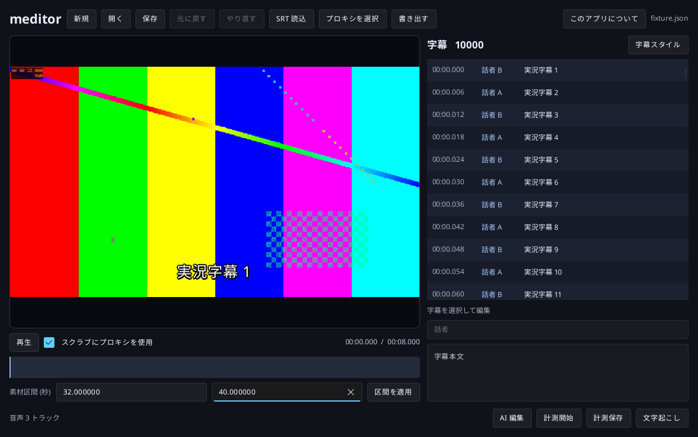
なぜ成功か
すべての確認点が期待値と一致しました。 素材の開始・終了と先頭の再生位置、区間の長さで、変更前の状態を確認する。
確認点 期待値 実際の値 結果 素材区間 32.000000 – 40.000000 秒 32.000000 – 40.000000 秒 成功 再生位置 ／ 区間の長さ 00:00.000 / 00:08.000 00:00.000 / 00:08.000 成功 無効な時刻で区間を適用する
- 開始または終了に例の時刻を入力し、「区間を適用」を押す
操作直後の画面原寸で開く ↗ なぜ成功か
すべての確認点が期待値と一致しました。 入力エラーが表示され、適用済みの素材区間とタイムラインの長さが変更前のままである。
確認点 期待値 実際の値 結果 入力エラーの表示 開始時刻を確認してください 開始時刻を確認してください 成功 適用されている素材区間 32.000000 – 40.000000 秒 32.000000 – 40.000000 秒 成功 再生位置 ／ 区間の長さ 00:00.000 / 00:08.000 00:00.000 / 00:08.000 成功
Gherkinの手順
docs/features/ai-clip-editing.feature:51
例 51行目 · 境界 = 開始、秒 = -1
背景前提 90 秒の実況動画と対応するゲーム音・話者音声がプロジェクトから参照できる
前提 素材時刻 32 秒から 40 秒までのクリップがタイムライン時刻 0 秒にある
もし 制作者が GUI でクリップの開始を素材時刻 -1 秒に調整しようとする
ならば 素材時刻 32 秒から 40 秒までのクリップがタイムライン時刻 0 秒に保持される
AI による実況動画の切り出しと GUI での修正
無効な素材区間への GUI 編集は修正前のクリップを保持する
画面検査の操作と結果
エディターにクリックとキー入力を送信して検査しています。OSのファイル選択には合成素材のパスを渡しています。
合成プロジェクトで入力時のエラー表示と、適用済みの区間が保持されることを確認します。
素材区間を設定済みのプロジェクトを開く
- 素材区間を設定した合成プロジェクトを開く
操作直後の画面原寸で開く ↗ 
なぜ成功か
すべての確認点が期待値と一致しました。 素材の開始・終了と先頭の再生位置、区間の長さで、変更前の状態を確認する。
確認点 期待値 実際の値 結果 素材区間 32.000000 – 40.000000 秒 32.000000 – 40.000000 秒 成功 再生位置 ／ 区間の長さ 00:00.000 / 00:08.000 00:00.000 / 00:08.000 成功 無効な時刻で区間を適用する
- 開始または終了に例の時刻を入力し、「区間を適用」を押す
操作直後の画面原寸で開く ↗ 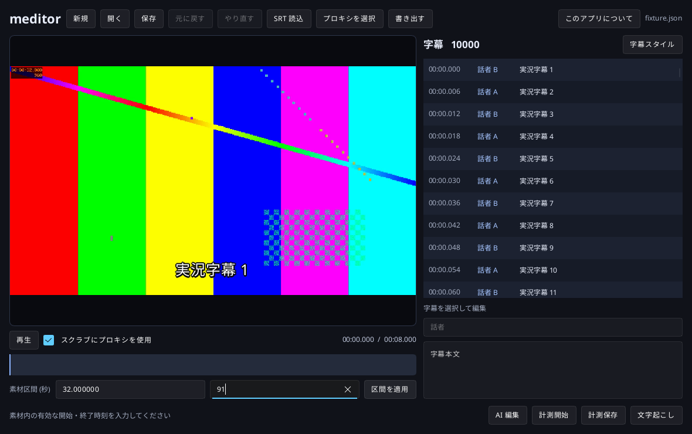
なぜ成功か
すべての確認点が期待値と一致しました。 入力エラーが表示され、適用済みの素材区間とタイムラインの長さが変更前のままである。
確認点 期待値 実際の値 結果 入力エラーの表示 素材内の有効な開始・終了時刻を入力してください 素材内の有効な開始・終了時刻を入力してください 成功 適用されている素材区間 32.000000 – 40.000000 秒 32.000000 – 40.000000 秒 成功 再生位置 ／ 区間の長さ 00:00.000 / 00:08.000 00:00.000 / 00:08.000 成功
Gherkinの手順
docs/features/ai-clip-editing.feature:52
例 52行目 · 境界 = 終了、秒 = 91
背景前提 90 秒の実況動画と対応するゲーム音・話者音声がプロジェクトから参照できる
前提 素材時刻 32 秒から 40 秒までのクリップがタイムライン時刻 0 秒にある
もし 制作者が GUI でクリップの終了を素材時刻 91 秒に調整しようとする
ならば 素材時刻 32 秒から 40 秒までのクリップがタイムライン時刻 0 秒に保持される
AI による実況動画の切り出しと GUI での修正
無効な素材区間への GUI 編集は修正前のクリップを保持する
画面検査の操作と結果
エディターにクリックとキー入力を送信して検査しています。OSのファイル選択には合成素材のパスを渡しています。
合成プロジェクトで入力時のエラー表示と、適用済みの区間が保持されることを確認します。
素材区間を設定済みのプロジェクトを開く
- 素材区間を設定した合成プロジェクトを開く
操作直後の画面原寸で開く ↗ なぜ成功か
すべての確認点が期待値と一致しました。 素材の開始・終了と先頭の再生位置、区間の長さで、変更前の状態を確認する。
確認点 期待値 実際の値 結果 素材区間 32.000000 – 40.000000 秒 32.000000 – 40.000000 秒 成功 再生位置 ／ 区間の長さ 00:00.000 / 00:08.000 00:00.000 / 00:08.000 成功 無効な時刻で区間を適用する
- 開始または終了に例の時刻を入力し、「区間を適用」を押す
操作直後の画面原寸で開く ↗ なぜ成功か
すべての確認点が期待値と一致しました。 入力エラーが表示され、適用済みの素材区間とタイムラインの長さが変更前のままである。
確認点 期待値 実際の値 結果 入力エラーの表示 素材内の有効な開始・終了時刻を入力してください 素材内の有効な開始・終了時刻を入力してください 成功 適用されている素材区間 32.000000 – 40.000000 秒 32.000000 – 40.000000 秒 成功 再生位置 ／ 区間の長さ 00:00.000 / 00:08.000 00:00.000 / 00:08.000 成功
Gherkinの手順
docs/features/ai-clip-editing.feature:53
例 53行目 · 境界 = 開始、秒 = 40
背景前提 90 秒の実況動画と対応するゲーム音・話者音声がプロジェクトから参照できる
前提 素材時刻 32 秒から 40 秒までのクリップがタイムライン時刻 0 秒にある
もし 制作者が GUI でクリップの開始を素材時刻 40 秒に調整しようとする
ならば 素材時刻 32 秒から 40 秒までのクリップがタイムライン時刻 0 秒に保持される
AI による実況動画の切り出しと GUI での修正
無効な素材区間への GUI 編集は修正前のクリップを保持する
画面検査の操作と結果
エディターにクリックとキー入力を送信して検査しています。OSのファイル選択には合成素材のパスを渡しています。
合成プロジェクトで入力時のエラー表示と、適用済みの区間が保持されることを確認します。
素材区間を設定済みのプロジェクトを開く
- 素材区間を設定した合成プロジェクトを開く
操作直後の画面原寸で開く ↗ なぜ成功か
すべての確認点が期待値と一致しました。 素材の開始・終了と先頭の再生位置、区間の長さで、変更前の状態を確認する。
確認点 期待値 実際の値 結果 素材区間 32.000000 – 40.000000 秒 32.000000 – 40.000000 秒 成功 再生位置 ／ 区間の長さ 00:00.000 / 00:08.000 00:00.000 / 00:08.000 成功 無効な時刻で区間を適用する
- 開始または終了に例の時刻を入力し、「区間を適用」を押す
操作直後の画面原寸で開く ↗ なぜ成功か
すべての確認点が期待値と一致しました。 入力エラーが表示され、適用済みの素材区間とタイムラインの長さが変更前のままである。
確認点 期待値 実際の値 結果 入力エラーの表示 素材内の有効な開始・終了時刻を入力してください 素材内の有効な開始・終了時刻を入力してください 成功 適用されている素材区間 32.000000 – 40.000000 秒 32.000000 – 40.000000 秒 成功 再生位置 ／ 区間の長さ 00:00.000 / 00:08.000 00:00.000 / 00:08.000 成功
Gherkinの手順
docs/features/ai-clip-editing.feature:54
例 54行目 · 境界 = 終了、秒 = 31
背景前提 90 秒の実況動画と対応するゲーム音・話者音声がプロジェクトから参照できる
前提 素材時刻 32 秒から 40 秒までのクリップがタイムライン時刻 0 秒にある
もし 制作者が GUI でクリップの終了を素材時刻 31 秒に調整しようとする
ならば 素材時刻 32 秒から 40 秒までのクリップがタイムライン時刻 0 秒に保持される
AI による実況動画の切り出しと GUI での修正
AI が対象区間を選べない理由が分かる
Gherkinの手順
docs/features/ai-clip-editing.feature:65
例 65行目 · 状態 = 参照できる文字起こし結果がない、理由 = 文字起こし結果が必要
背景前提 90 秒の実況動画と対応するゲーム音・話者音声がプロジェクトから参照できる
前提 配置先のタイムラインは空である
かつ 参照できる文字起こし結果がない
もし 制作者が AI に編集を依頼する
ならば GUI に「文字起こし結果が必要」に相当する理由が示される
かつ タイムラインは空のままである
AI による実況動画の切り出しと GUI での修正
AI が対象区間を選べない理由が分かる
Gherkinの手順
docs/features/ai-clip-editing.feature:66
例 66行目 · 状態 = 文字起こし結果に編集指示が示す内容に該当する発話が存在しない、理由 = 指示の対象区間を特定できない
背景前提 90 秒の実況動画と対応するゲーム音・話者音声がプロジェクトから参照できる
前提 配置先のタイムラインは空である
かつ 文字起こし結果に編集指示が示す内容に該当する発話が存在しない
もし 制作者が AI に編集を依頼する
ならば GUI に「指示の対象区間を特定できない」に相当する理由が示される
かつ タイムラインは空のままである
AI による実況動画の切り出しと GUI での修正
AI が返した無効な素材区間を適用できない
Gherkinの手順
docs/features/ai-clip-editing.feature:77
例 77行目 · 開始秒 = -1、終了秒 = 40
背景前提 90 秒の実況動画と対応するゲーム音・話者音声がプロジェクトから参照できる
前提 配置先のタイムラインは空である
かつ 素材時刻に対応付けられた文字起こし結果が参照できる
もし 編集指示を受けた AI が素材時刻 -1 秒から 40 秒までを返す
ならば GUI で今回の編集を適用できなかったことが分かる
かつ タイムラインは空のままである
AI による実況動画の切り出しと GUI での修正
AI が返した無効な素材区間を適用できない
Gherkinの手順
docs/features/ai-clip-editing.feature:78
例 78行目 · 開始秒 = 30、終了秒 = 91
背景前提 90 秒の実況動画と対応するゲーム音・話者音声がプロジェクトから参照できる
前提 配置先のタイムラインは空である
かつ 素材時刻に対応付けられた文字起こし結果が参照できる
もし 編集指示を受けた AI が素材時刻 30 秒から 91 秒までを返す
ならば GUI で今回の編集を適用できなかったことが分かる
かつ タイムラインは空のままである
AI による実況動画の切り出しと GUI での修正
AI が返した無効な素材区間を適用できない
Gherkinの手順
docs/features/ai-clip-editing.feature:79
例 79行目 · 開始秒 = 40、終了秒 = 40
背景前提 90 秒の実況動画と対応するゲーム音・話者音声がプロジェクトから参照できる
前提 配置先のタイムラインは空である
かつ 素材時刻に対応付けられた文字起こし結果が参照できる
もし 編集指示を受けた AI が素材時刻 40 秒から 40 秒までを返す
ならば GUI で今回の編集を適用できなかったことが分かる
かつ タイムラインは空のままである
AI による実況動画の切り出しと GUI での修正
AI 処理の失敗で途中の編集操作が反映されない
Gherkinの手順
docs/features/ai-clip-editing.feature:81
背景前提 90 秒の実況動画と対応するゲーム音・話者音声がプロジェクトから参照できる
前提 配置先が空のタイムラインである編集指示を AI が処理中で、GUI に処理中と表示されている
もし AI 処理が途中で失敗する
ならば GUI で今回の編集を適用できなかったことが分かる
かつ タイムラインは空のままである
AI による実況動画の切り出しと GUI での修正
中断した AI 処理が後から結果を返しても適用されない
Gherkinの手順
docs/features/ai-clip-editing.feature:87
背景前提 90 秒の実況動画と対応するゲーム音・話者音声がプロジェクトから参照できる
前提 配置先が空のタイムラインである編集指示を AI が処理中で、GUI に処理中と表示されている
もし 制作者が処理を中断する
かつ 中断した処理が後から有効な素材区間を返す
ならば タイムラインは空のままである
AI による実況動画の切り出しと GUI での修正
処理中に前提が変わったときは制作者の変更を保持する
Gherkinの手順
docs/features/ai-clip-editing.feature:102
例 102行目 · 変更 = 対象の実況動画を差し替える、保持される状態 = 差し替えた動画が参照され、タイムラインは空である
背景前提 90 秒の実況動画と対応するゲーム音・話者音声がプロジェクトから参照できる
前提 配置先が空のタイムラインである編集指示を AI が処理中で、GUI に処理中と表示されている
もし 制作者が処理中に対象の実況動画を差し替える
かつ AI が処理開始時の前提に基づく素材区間を返す
ならば GUI で今回の編集を適用できなかったことが分かる
かつ 差し替えた動画が参照され、タイムラインは空である
AI による実況動画の切り出しと GUI での修正
処理中に前提が変わったときは制作者の変更を保持する
Gherkinの手順
docs/features/ai-clip-editing.feature:103
例 103行目 · 変更 = 参照していた文字起こし結果を差し替える、保持される状態 = 差し替えた文字起こし結果が参照され、タイムラインは空である
背景前提 90 秒の実況動画と対応するゲーム音・話者音声がプロジェクトから参照できる
前提 配置先が空のタイムラインである編集指示を AI が処理中で、GUI に処理中と表示されている
もし 制作者が処理中に参照していた文字起こし結果を差し替える
かつ AI が処理開始時の前提に基づく素材区間を返す
ならば GUI で今回の編集を適用できなかったことが分かる
かつ 差し替えた文字起こし結果が参照され、タイムラインは空である
AI による実況動画の切り出しと GUI での修正
処理中に前提が変わったときは制作者の変更を保持する
Gherkinの手順
docs/features/ai-clip-editing.feature:104
例 104行目 · 変更 = 配置先のタイムラインにクリップを追加する、保持される状態 = 制作者が追加したクリップだけがタイムラインにある
背景前提 90 秒の実況動画と対応するゲーム音・話者音声がプロジェクトから参照できる
前提 配置先が空のタイムラインである編集指示を AI が処理中で、GUI に処理中と表示されている
もし 制作者が処理中に配置先のタイムラインにクリップを追加する
かつ AI が処理開始時の前提に基づく素材区間を返す
ならば GUI で今回の編集を適用できなかったことが分かる
かつ 制作者が追加したクリップだけがタイムラインにある
Codex App Server への接続と素材の送信許可
ChatGPT にログインした Codex で指示と字幕を送る
Gherkinの手順
docs/features/ai-connections.feature:4
前提 制作者が meditor 専用の Codex フォルダーで ChatGPT にログインしている
かつ 全編に対応する時刻付き字幕を読み込んでいる
もし 制作者が「最初のボス戦の感想を残して」と入力して送信を選ぶ
ならば Codex App Server が編集指示と時刻付き字幕を受け取る
かつ 素材の映像・音声・ローカルのパスは送信データに含まれない
Codex App Server への接続と素材の送信許可
ログインしていない状態で編集を依頼する
Gherkinの手順
docs/features/ai-connections.feature:11
前提 meditor 専用の Codex フォルダーで ChatGPT にログインしていない
もし 制作者が字幕を読み込んだプロジェクトで編集指示を送信する
ならば Codex CLI へログインする手順が分かる
かつ 編集指示と字幕は送信されない
かつ 編集内容は変わらない
Codex App Server への接続と素材の送信許可
実行ツールの無効化または区間選択モデルを確認できない
Gherkinの手順
docs/features/ai-connections.feature:18
前提 制作者が時刻付き字幕と編集指示を用意している
かつ App Server が Code Mode を有効と報告するか、指定したモデルと異なるモデルを返す
もし 制作者が編集指示を送信する
ならば meditor が Codex の設定を確認できなかったと表示する
かつ 編集指示と字幕は App Server に送られない
かつ 編集内容は変わらない
Codex App Server への接続と素材の送信許可
文字起こし・話者識別と音声分離を PC 内で行う
Gherkinの手順
docs/features/ai-connections.feature:26
前提 実況動画と混合音声がある
もし 制作者が自動文字起こし、話者識別、音声分離を実行する
ならば それらの処理は Windows PC 内で実行される
かつ それらの処理によって映像・音声が外部サービスに送信されない
音声編集とミックス
話者音声の配置とトリミングで有効な区間が変わる
Gherkinの手順
docs/features/audio-editing.feature:4
前提 ゲーム音がタイムラインの 0–10 秒にあり、話者音声の素材が 0–6 秒ある
かつ 映像はタイムラインの 0–4 秒にある
もし 制作者が話者音声の素材 1–4 秒をタイムラインの 2 秒に置く
ならば 2–5 秒ではゲーム音と話者音声が一緒に出力される
かつ 4–5 秒ではキャンバスの背景が表示され、両方の音声は続く
かつ 2 秒より前と 5 秒以降は、話者音声を加えずゲーム音を出力する
かつ 話者音声の元素材の 0–6 秒は引き続き編集に使える
音声編集とミックス
音量とフェードをプレビューで確認し、同じ設定で書き出す
Gherkinの手順
docs/features/audio-editing.feature:13
前提 話者音声のクリップとゲーム音のトラックが同じ時刻にある
もし 制作者が話者音声のクリップ音量を下げ、先頭と末尾に 1 秒ずつのフェードを付ける
ならば 話者音声は先頭で徐々に大きくなり、末尾で徐々に小さくなる
かつ ゲーム音のレベルはその編集で変化しない
かつ トラックごととミックス後のレベルを確認できる
かつ 書き出した動画の話者音声にも音量とフェードが反映される
音声編集とミックス
ミュートとソロ試聴で出力を使い分ける
Gherkinの手順
docs/features/audio-editing.feature:21
前提 ゲーム音、話者 A、話者 B の音声が同じ時刻にあり、話者 B はミュートされている
もし 制作者が話者 A をソロにして再生する
ならば プレビューでは話者 A だけが聞こえる
もし 制作者がそのまま書き出す
ならば 出力ではゲーム音と話者 A が聞こえ、話者 B は聞こえない
もし 制作者がソロを解除して再生する
ならば プレビューでもゲーム音と話者 A が聞こえる
音声編集とミックス
チャットで変更した音量を GUI から元に戻す
Gherkinの手順
docs/features/audio-editing.feature:30
前提 話者 A のトラック音量は 0 dB である
もし 制作者がチャットで「話者 A のトラックを 6 dB 下げて」と依頼する
ならば GUI と作業履歴で話者 A のトラック音量が -6 dB になったことを確認できる
もし 制作者が GUI でその操作を元に戻す
ならば 話者 A のトラック音量は 0 dB に戻る
かつ その他のトラックは変更前の設定を保つ
チャットでの AI 編集
依頼に応じて編集可能な実況動画を作る
Gherkinの手順
docs/features/chat-editing.feature:13
例 13行目 · 指示 = 最初のボス戦の感想を切り出して、編集結果 = 指定場面を含む一つのクリップがタイムラインに入る
前提 指定した場面、二つの見どころ、無言の待機区間を含む実況プロジェクトがある
かつ 対応する文字起こし結果が参照できる
もし 制作者がチャットで「最初のボス戦の感想を切り出して」と AI に依頼する
ならば 指定場面を含む一つのクリップがタイムラインに入る
かつ 制作者がタイムライン上で結果をプレビューして修正できる
チャットでの AI 編集
依頼に応じて編集可能な実況動画を作る
Gherkinの手順
docs/features/chat-editing.feature:14
例 14行目 · 指示 = 二つの見どころをまとめて、編集結果 = 二つの見どころがタイムラインに並ぶ
前提 指定した場面、二つの見どころ、無言の待機区間を含む実況プロジェクトがある
かつ 対応する文字起こし結果が参照できる
もし 制作者がチャットで「二つの見どころをまとめて」と AI に依頼する
ならば 二つの見どころがタイムラインに並ぶ
かつ 制作者がタイムライン上で結果をプレビューして修正できる
チャットでの AI 編集
依頼に応じて編集可能な実況動画を作る
Gherkinの手順
docs/features/chat-editing.feature:15
例 15行目 · 指示 = 無言の待ち時間を詰めて字幕付きの投稿用動画にして、編集結果 = 待機区間を除いた場面がつながり発話に字幕が付く
前提 指定した場面、二つの見どころ、無言の待機区間を含む実況プロジェクトがある
かつ 対応する文字起こし結果が参照できる
もし 制作者がチャットで「無言の待ち時間を詰めて字幕付きの投稿用動画にして」と AI に依頼する
ならば 待機区間を除いた場面がつながり発話に字幕が付く
かつ 制作者がタイムライン上で結果をプレビューして修正できる
チャットでの AI 編集
同じチャットで追加指示し、GUI でも修正する
Gherkinの手順
docs/features/chat-editing.feature:17
前提 AI が二つのクリップを配置した会話とタイムラインがある
もし 制作者が「二つ目を先にして、話者Aの音量を上げて」と追加指示する
ならば クリップの順番と話者Aの音量が同じプロジェクトに反映される
もし 制作者がそのクリップの字幕を GUI で修正する
ならば その修正が同じタイムラインのプレビューに反映される
チャットでの AI 編集
チャットで映像と音声の処理を追加する
Gherkinの手順
docs/features/chat-editing.feature:31
例 31行目 · 指示 = このテロップを黄色い文字にして、結果 = テロップの装飾
前提 字幕と音声がある編集可能な実況クリップがある
もし 制作者が「このテロップを黄色い文字にして」と頼み、処理が完了する
ならば テロップの装飾が同じプロジェクトとプレビューに反映される
チャットでの AI 編集
チャットで映像と音声の処理を追加する
Gherkinの手順
docs/features/chat-editing.feature:32
例 32行目 · 指示 = この場面の映像をズームして、結果 = 指定場面のズーム
前提 字幕と音声がある編集可能な実況クリップがある
もし 制作者が「この場面の映像をズームして」と頼み、処理が完了する
ならば 指定場面のズームが同じプロジェクトとプレビューに反映される
チャットでの AI 編集
チャットで映像と音声の処理を追加する
Gherkinの手順
docs/features/chat-editing.feature:33
例 33行目 · 指示 = ここに取り込んだ効果音を入れて、結果 = 指定位置に配置された効果音
前提 字幕と音声がある編集可能な実況クリップがある
もし 制作者が「ここに取り込んだ効果音を入れて」と頼み、処理が完了する
ならば 指定位置に配置された効果音が同じプロジェクトとプレビューに反映される
チャットでの AI 編集
チャットで映像と音声の処理を追加する
Gherkinの手順
docs/features/chat-editing.feature:34
例 34行目 · 指示 = この動画を縦長の9対16にして、結果 = 9対16の映像
前提 字幕と音声がある編集可能な実況クリップがある
もし 制作者が「この動画を縦長の9対16にして」と頼み、処理が完了する
ならば 9対16の映像が同じプロジェクトとプレビューに反映される
チャットでの AI 編集
中断後に届いた編集結果で作業中の変更を上書きしない
Gherkinの手順
docs/features/chat-editing.feature:36
前提 チャットの編集依頼が処理中である
もし 制作者が依頼を中断し、GUI で字幕を修正する
かつ 中断した依頼が後から結果を返す
ならば 中断した依頼の変更は適用されない
かつ 制作者の字幕修正は保持される
チャットでの AI 編集
一度に依頼した編集の途中で失敗した場合は現在の編集を保持する
Gherkinの手順
docs/features/chat-editing.feature:43
前提 制作者がカットと話者音量を一緒に変更するようチャットで頼んだ
もし AI が有効なカット変更と適用できない音量設定を返す
ならば カットも音量も現在の編集のままである
かつ 適用できなかった理由がチャットに示される
チャット履歴と作業履歴
保存したチャットと作業履歴から編集を再開する
Gherkinの手順
docs/features/edit-history.feature:5
前提 AI のカット変更と、その後に人が行った字幕修正がある
もし 制作者がプロジェクトを保存して開き直す
ならば 前回のプロンプトと応答をチャットで見返せる
かつ 作業履歴に、AI のカット変更と人の字幕修正が時系列で表示される
かつ 制作者が前回の会話に続けて編集を依頼できる
チャット履歴と作業履歴
GUI とチャットで同じ作業履歴を元に戻し、やり直す
Gherkinの手順
docs/features/edit-history.feature:22
例 22行目 · やり方 = GUI
前提 AI が一回の依頼でカットと音量をまとめて変更している
もし 制作者がGUIでその変更を元に戻す
ならば カットと音量の両方が変更前に戻る
もし 制作者がGUIでやり直す
ならば カットと音量の両方が再適用される
チャット履歴と作業履歴
GUI とチャットで同じ作業履歴を元に戻し、やり直す
Gherkinの手順
docs/features/edit-history.feature:23
例 23行目 · やり方 = チャット
前提 AI が一回の依頼でカットと音量をまとめて変更している
もし 制作者がチャットでその変更を元に戻す
ならば カットと音量の両方が変更前に戻る
もし 制作者がチャットでやり直す
ならば カットと音量の両方が再適用される
チャット履歴と作業履歴
後から行った独立した字幕修正を残してカット変更だけ差し戻す
Gherkinの手順
docs/features/edit-history.feature:26
前提 AI のカット変更の後に、制作者が別のクリップの字幕を修正している
もし 制作者が「字幕は残して、前のカット変更だけ戻して」とチャットで頼む
ならば 対象のカットだけが変更前に戻る
かつ 別のクリップの字幕修正が保持される
かつ 作業履歴に対象のカット変更を参照する差し戻しが追加される
チャット履歴と作業履歴
差し戻しが後続の編集に影響する場合は確認を待つ
Gherkinの手順
docs/features/edit-history.feature:44
例 44行目 · 選択 = クリップとその字幕への影響を確認して続行、結果 = 示された内容で差し戻しが反映され、作業履歴に追加される
前提 AI が追加したクリップに、後から制作者が字幕を付けている
もし 制作者がチャットでそのクリップを追加した変更だけ戻すよう頼む
ならば クリップに付いた字幕への影響が示される
かつ 確認するまではクリップも字幕も保持される
もし 制作者が「クリップとその字幕への影響を確認して続行」を選ぶ
ならば 示された内容で差し戻しが反映され、作業履歴に追加される
チャット履歴と作業履歴
差し戻しが後続の編集に影響する場合は確認を待つ
Gherkinの手順
docs/features/edit-history.feature:45
例 45行目 · 選択 = キャンセル、結果 = クリップと字幕は現在の状態を保つ
前提 AI が追加したクリップに、後から制作者が字幕を付けている
もし 制作者がチャットでそのクリップを追加した変更だけ戻すよう頼む
ならば クリップに付いた字幕への影響が示される
かつ 確認するまではクリップも字幕も保持される
もし 制作者が「キャンセル」を選ぶ
ならば クリップと字幕は現在の状態を保つ
チャット履歴と作業履歴
Undo の後の新しい編集で通常の Redo の候補を消す
画面検査の操作と結果
エディターにクリックとキー入力を送信して検査しています。OSのファイル選択には合成素材のパスを渡しています。
素材区間を0〜9秒に変更する
- 合成プロジェクトを開く
- 開始に「0」、終了に「9」を入力して「区間を適用」を押す
操作直後の画面原寸で開く ↗ 
なぜ成功か
すべての確認点が期待値と一致しました。 入力した 0〜9 秒が素材区間に反映されれば、続く Undo で取り消す変更が作成されている。
確認点 期待値 実際の値 結果 素材区間 0.000000 – 9.000000 秒 0.000000 – 9.000000 秒 成功 区間変更を元に戻す
- 前提
- 制作者が以前のクリップ変更を元に戻し、Redo ができる
- ツールバーの「元に戻す」を押す
操作直後の画面原寸で開く ↗ なぜ成功か
すべての確認点が期待値と一致しました。 区間が元の 0〜60 秒に戻り、Redo が有効なら、取り消した区間変更をまだ再適用できる。
確認点 期待値 実際の値 結果 素材区間 0.000000 – 60.000000 秒 0.000000 – 60.000000 秒 成功 やり直すボタン 有効 有効 成功 別の編集として字幕本文を変更する
- もし
- 制作者が代わりに字幕を修正し、その変更を適用する
- ならば
- 字幕の修正が現在の編集状態に反映される
- かつ
- 通常の Redo は利用できなくなる
- 字幕一覧の先頭行を選び、本文を「ボス戦」に書き換える
操作直後の画面原寸で開く ↗ 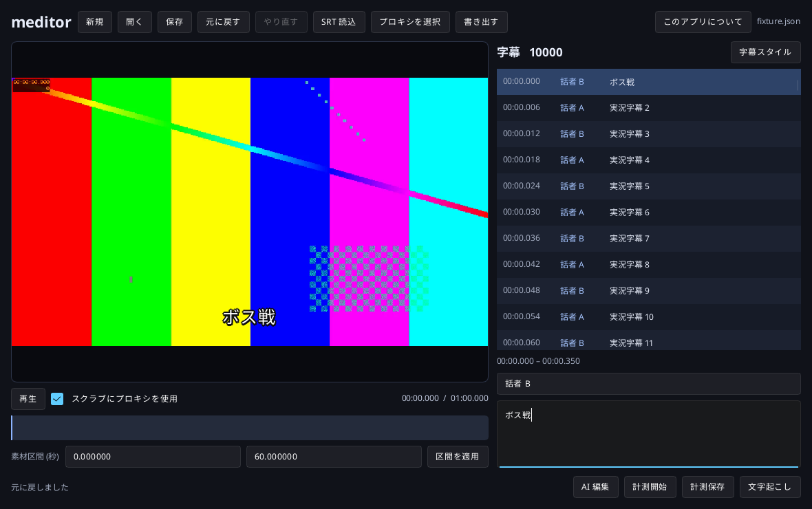
なぜ成功か
すべての確認点が期待値と一致しました。 字幕に「ボス戦」が反映され、Redo が無効なら、新しい字幕編集を適用した時点で以前の区間変更の Redo 候補が消えている。
確認点 期待値 実際の値 結果 字幕一覧の本文 ボス戦 ボス戦 成功 やり直すボタン 無効 無効 成功
Gherkinの手順
docs/features/edit-history.feature:48
前提 制作者が以前のクリップ変更を元に戻し、Redo ができる
もし 制作者が代わりに字幕を修正し、その変更を適用する
ならば 字幕の修正が現在の編集状態に反映される
かつ 通常の Redo は利用できなくなる
チャット履歴と作業履歴
Redo の候補から外れた変更を作業履歴から確認する
Gherkinの手順
docs/features/edit-history.feature:55
前提 制作者が以前のクリップ変更を元に戻し、Redo ができる
もし 制作者が代わりに字幕を修正し、その変更を適用する
ならば 以前のクリップ変更は作業履歴から確認できる
チャット履歴と作業履歴
保存後に開き直したプロジェクトで Undo と Redo を使う
画面検査の操作と結果
エディターにクリックとキー入力を送信して検査しています。OSのファイル選択には合成素材のパスを渡しています。
字幕と素材区間を順に変更する
- 前提
- 制作者が字幕本文を「ボス戦」に編集し、続けてクリップの区間を変更した
- 合成プロジェクトを開く
- 字幕一覧の先頭行を選び、本文を「ボス戦」に書き換える
- 開始に「0」、終了に「9」を入力して「区間を適用」を押す
操作直後の画面原寸で開く ↗ なぜ成功か
すべての確認点が期待値と一致しました。 字幕が「ボス戦」で区間が 0〜9 秒なら、字幕編集と区間変更の両方が反映されている。
確認点 期待値 実際の値 結果 字幕一覧の本文 ボス戦 ボス戦 成功 素材区間 0.000000 – 9.000000 秒 0.000000 – 9.000000 秒 成功 区間変更だけを元に戻して保存する
- かつ
- 区間変更だけを元に戻してプロジェクトを保存した
- ツールバーの「元に戻す」を押す
- ツールバーの「保存」を押す
操作直後の画面原寸で開く ↗ 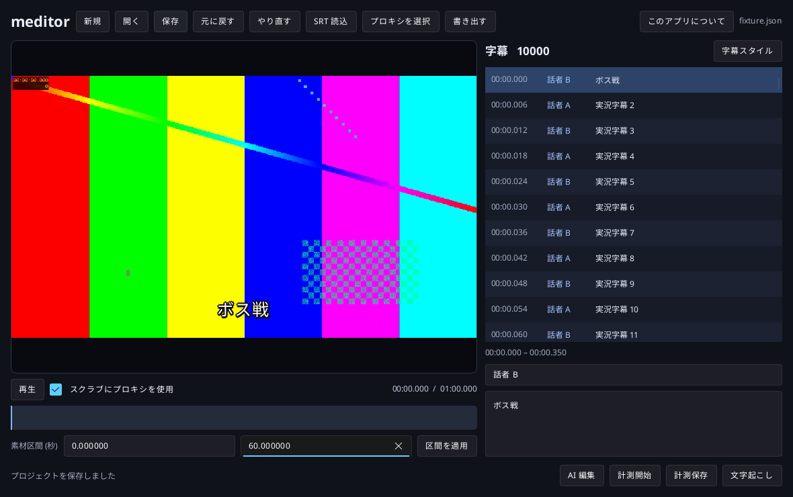
なぜ成功か
すべての確認点が期待値と一致しました。 区間だけが元の 0〜60 秒に戻り、保存完了が表示されれば、その状態で保存できた。
確認点 期待値 実際の値 結果 素材区間 0.000000 – 60.000000 秒 0.000000 – 60.000000 秒 成功 保存結果 プロジェクトを保存しました プロジェクトを保存しました 成功 保存したプロジェクトを開き直す
- もし
- 制作者が保存したプロジェクトを開き直す
- ならば
- 字幕は「ボス戦」で、クリップの区間は Undo 後の値である
- かつ
- 「元に戻す」と「やり直す」の両方を使える
- 直前に保存した fixture.json を再度開く
操作直後の画面原寸で開く ↗ なぜ成功か
すべての確認点が期待値と一致しました。 字幕が「ボス戦」のままで区間が 0〜60 秒に戻っており、Undo と Redo の両方が有効なら、編集内容と両方向の履歴を復元できている。
確認点 期待値 実際の値 結果 字幕一覧の本文 ボス戦 ボス戦 成功 素材区間 0.000000 – 60.000000 秒 0.000000 – 60.000000 秒 成功 元に戻すボタン 有効 有効 成功 やり直すボタン 有効 有効 成功 区間変更をやり直す
- もし
- 制作者が「やり直す」を押す
- ならば
- 保存前に元に戻した区間変更が適用される
- ツールバーの「やり直す」を押す
操作直後の画面原寸で開く ↗ なぜ成功か
すべての確認点が期待値と一致しました。 区間が再び 0〜9 秒になれば、保存前に取り消した区間変更を開き直したあとに再適用できている。
確認点 期待値 実際の値 結果 素材区間 0.000000 – 9.000000 秒 0.000000 – 9.000000 秒 成功
Gherkinの手順
docs/features/edit-history.feature:61
前提 制作者が字幕本文を「ボス戦」に編集し、続けてクリップの区間を変更した
かつ 区間変更だけを元に戻してプロジェクトを保存した
もし 制作者が保存したプロジェクトを開き直す
ならば 字幕は「ボス戦」で、クリップの区間は Undo 後の値である
かつ 「元に戻す」と「やり直す」の両方を使える
もし 制作者が「やり直す」を押す
ならば 保存前に元に戻した区間変更が適用される
FFmpeg 設定とノード編集
FFmpeg の項目を専用画面から選ぶ
Gherkinの手順
docs/features/ffmpeg-controls.feature:4
前提 配布する FFmpeg で利用できるフィルター・コーデック・出力形式と各設定項目が分かっている
もし 制作者が FFmpeg の専用設定画面を開く
ならば 配布構成で利用可能なすべての項目を選択できる
もし 制作者がフィルターと適用先を選び、設定値と書き出し設定を入力する
ならば 適用先、フィルターの値、エンコーダー、画質、出力形式を設定画面で確認できる
FFmpeg 設定とノード編集
チャットで指定したフィルターを GUI で確認して調整する
Gherkinの手順
docs/features/ffmpeg-controls.feature:11
前提 話者Aと話者Bの音声トラックがあり、loudnorm が利用できる
もし 制作者が「話者Aに loudnorm を適用して、目標値を -16 LUFS にして」と頼む
ならば 設定画面に適用先が話者Aで目標値が -16 LUFS の処理が表示される
もし 制作者が設定画面で目標値を -18 LUFS に変える
ならば 同じプロジェクトの話者Aの処理は -18 LUFS になり、話者Bの処理は変わらない
FFmpeg 設定とノード編集
映像を分岐して拡大し、小窓として合成する
Gherkinの手順
docs/features/ffmpeg-controls.feature:18
前提 一つの実況映像入力がある
もし 制作者がノード画面で映像入力を二つに分岐する
かつ 一方を拡大して元の映像と合成し、映像出力へつなぐ
ならば ノード画面に両方の経路と合成順が表示される
かつ プレビューに元の映像と拡大した小窓が映る
FFmpeg 設定とノード編集
AI が組んだ音声ノードの分岐を GUI で調整する
Gherkinの手順
docs/features/ffmpeg-controls.feature:25
前提 AI がゲーム音と話者Aを別々に調整して合成する処理を組んでいる
もし 制作者がノード画面で話者A側にだけ音声フィルターを追加する
ならば 話者Aは追加したフィルターを通ってからゲーム音と合成される
かつ ゲーム音側の処理は変更されない
FFmpeg 設定とノード編集
種類の異なる端子の接続を適用しない
Gherkinの手順
docs/features/ffmpeg-controls.feature:31
前提 有効な映像と音声のノード構成をプレビューできる
もし 制作者が映像出力を音声用の入力端子へつなごうとする
ならば 問題のある端子が分かる
かつ 適用済みのノード構成で引き続きプレビューできる
素材取り込みと音声分離
収録方法に応じてトラックを取り込む
Gherkinの手順
docs/features/media-import.feature:13
例 13行目 · 素材 = ゲーム音と話者音声が別トラックの実況動画、トラック状態 = ゲーム音と話者音声をそれぞれ選択できる
前提 ゲーム音と話者音声が別トラックの実況動画がある
もし 制作者が実況素材をプロジェクトに取り込む
ならば プロジェクトが元の実況動画を参照する
かつ ゲーム音と話者音声をそれぞれ選択できる
素材取り込みと音声分離
収録方法に応じてトラックを取り込む
Gherkinの手順
docs/features/media-import.feature:14
例 14行目 · 素材 = 実況動画と別収録のゲーム音・話者音声、トラック状態 = ゲーム音と話者音声をそれぞれ選択でき、動画に対するオフセットを調整できる
前提 実況動画と別収録のゲーム音・話者音声がある
もし 制作者が実況素材をプロジェクトに取り込む
ならば プロジェクトが元の実況動画を参照する
かつ ゲーム音と話者音声をそれぞれ選択でき、動画に対するオフセットを調整できる
素材取り込みと音声分離
収録方法に応じてトラックを取り込む
Gherkinの手順
docs/features/media-import.feature:15
例 15行目 · 素材 = ゲーム音と話者音声が一つの実況動画、トラック状態 = 元の混合音声を選択できる
前提 ゲーム音と話者音声が一つの実況動画がある
もし 制作者が実況素材をプロジェクトに取り込む
ならば プロジェクトが元の実況動画を参照する
かつ 元の混合音声を選択できる
素材取り込みと音声分離
混ざったゲーム音と二人の話者をローカルで分離する
Gherkinの手順
docs/features/media-import.feature:17
前提 ゲーム音と話者A・話者Bが混ざった録音を取り込んでいる
もし 制作者がその録音の音声分離を実行する
ならば Windows PC 内で音声分離が行われる
かつ ゲーム音・話者A・話者Bの各トラックを個別に選択できる
かつ プレビューで話者Bをミュートしてもゲーム音と話者Aは聴こえる
かつ 元の混合音声への参照が保持される
素材取り込みと音声分離
音声分離に失敗した素材をそのまま使う
Gherkinの手順
docs/features/media-import.feature:25
前提 元の混合音声をプロジェクトから参照できる
もし 音声分離を実行して分離結果を得られなかった
ならば 制作者に理由が示される
かつ 元の混合音声でプレビューできる
字幕の本文・表示区間・スタイルを編集する
字幕の本文と表示開始を修正する
Gherkinの手順
docs/features/subtitle-editing.feature:4
前提 タイムラインの 4 秒から 6 秒に字幕「ボス」がある
もし 制作者が本文を「ボス戦」、表示開始を 5 秒に変える
ならば 4 秒には字幕が表示されない
かつ 5 秒から「ボス戦」が表示される
字幕の本文・表示区間・スタイルを編集する
映像には字幕本文だけを表示する
関連するUI検査 · 字幕と縁取りをプレビューとMP4の画素で確認する
Gherkinの手順
docs/features/subtitle-editing.feature:10
前提 同じ時刻に話者Aの字幕「行こう」と話者Bの字幕「待って」がある
もし 制作者が該当する場面をプレビューして字幕を焼き込み MP4 を作る
ならば 両方の映像に「行こう」と「待って」が表示され、話者名の接頭辞は付かない
かつ 字幕一覧には話者Aと話者Bが表示される
字幕の本文・表示区間・スタイルを編集する
既定の字幕は映像の上に背景なしで表示される
関連するUI検査 · 字幕と縁取りをプレビューとMP4の画素で確認する
Gherkinの手順
docs/features/subtitle-editing.feature:16
前提 白と青の色分けがある映像に、背景を指定していない字幕がある
もし 制作者が該当する場面をプレビューして字幕を焼き込み MP4 を作る
ならば 両方で文字と縁取りが表示され、その周囲の映像の色分けが見える
かつ 字幕の背後に黒い長方形は追加されない
字幕の本文・表示区間・スタイルを編集する
字幕のフォントと縁取りと背景を反映する
Gherkinの手順
docs/features/subtitle-editing.feature:22
前提 同じ話者の字幕が二つあり、日本語の字形を持つフォントを二つ選べる
もし 制作者が一方に別のフォント、大きな文字サイズ、青い太い縁取り、半透明の白背景を設定する
ならば 対象の字幕だけに、設定した見た目がプレビューと焼き込み MP4 で反映される
もし 制作者が縁取りの太さを 0、背景を「なし」に変える
ならば 同じ字幕から縁取りと背景が消え、文字のフォントとサイズは維持される
字幕の本文・表示区間・スタイルを編集する
チャットで話者の色を変えて個別設定と履歴を確認する
Gherkinの手順
docs/features/subtitle-editing.feature:29
前提 話者Aと話者Bの字幕があり、話者Aの最後の字幕の文字色だけは赤に上書きされている
もし 制作者が「話者Aの文字色を黄色にして」と依頼し、結果を反映する
ならば 話者Aの個別指定のない字幕は黄色になり、最後の字幕は赤のまま表示される
かつ 話者Bの色は変わらない
もし 制作者がプロジェクトを保存して開き直し、その作業を元に戻す
ならば 話者Aの既定色が元に戻り、個別に設定した赤は維持される
字幕の本文・表示区間・スタイルを編集する
指定のフォントが使えない場合の表示を揃える
Gherkinの手順
docs/features/subtitle-editing.feature:37
前提 保存された字幕スタイルのフォントを現在の Windows 環境で使えない
もし 制作者がプロジェクトを開いてプレビューし、字幕を焼き込んで書き出す
ならば GUI で代替フォントが分かる
かつ プレビューと書き出しで同じ代替フォントが使われる
字幕の本文・表示区間・スタイルを編集する
プロジェクト全体の字幕スタイルを変更する
画面検査の操作と結果
エディターにクリックとキー入力を送信して検査しています。OSのファイル選択には合成素材のパスを渡しています。
画面検査の対象はプレビューの字幕と設定値、Undo での復元です。MP4の出力と背景の画素は別途確認が必要です。
既定の字幕をプレビューする
- 合成プロジェクトを開く
操作直後の画面原寸で開く ↗ なぜ成功か
すべての確認点が期待値と一致しました。 字幕が表示され、文字色と縁取りが適用前の値になっている。
確認点 期待値 実際の値 結果 文字色 #FFFFFF #FFFFFF 成功 縁取りの色 #101010 #101010 成功 縁取りの太さ 2 2 成功 プレビューの字幕本文 実況字幕 1 実況字幕 1 成功 黄色の文字と太い青の縁取りを適用する
- 字幕スタイルの文字色を黄色、縁取りを青、太さを8に設定して適用する
操作直後の画面原寸で開く ↗ 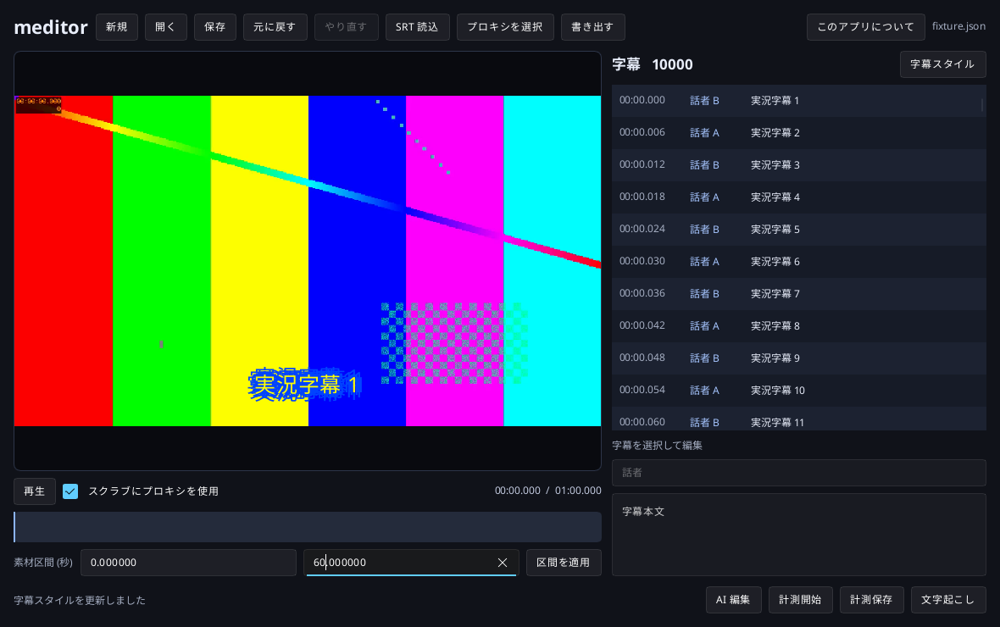
なぜ成功か
すべての確認点が期待値と一致しました。 設定が受理され、現在のプレビューに渡る文字色・縁取りの色・太さが更新される。
確認点 期待値 実際の値 結果 文字色 #FFFF00 #FFFF00 成功 縁取りの色 #0044FF #0044FF 成功 縁取りの太さ 8 8 成功 設定の適用 字幕スタイルを更新しました 字幕スタイルを更新しました 成功 プレビューの字幕本文 実況字幕 1 実況字幕 1 成功 字幕スタイルを一度で元に戻す
- ツールバーの「元に戻す」を押す
操作直後の画面原寸で開く ↗ 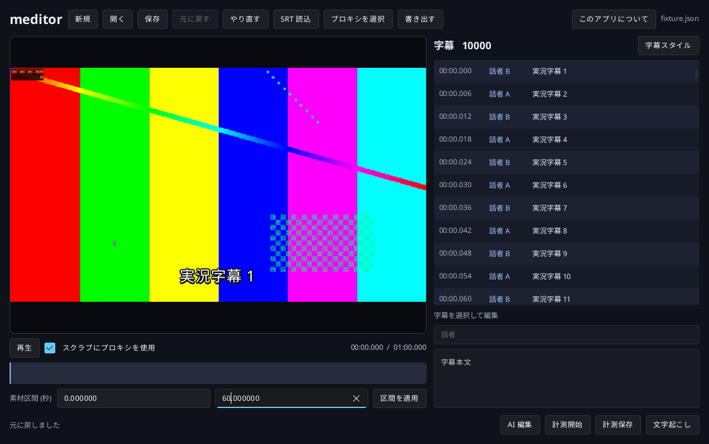
なぜ成功か
すべての確認点が期待値と一致しました。 Undo を一度行うと、プレビューの文字色・縁取りの色・太さがすべて適用前に戻る。
確認点 期待値 実際の値 結果 文字色 #FFFFFF #FFFFFF 成功 縁取りの色 #101010 #101010 成功 縁取りの太さ 2 2 成功 プレビューの字幕本文 実況字幕 1 実況字幕 1 成功
Gherkinの手順
docs/features/subtitle-editing.feature:43
前提 プレビューに字幕が表示されているプロジェクトがある
もし 制作者が字幕スタイルで文字色を黄色、縁取りを青く太くして適用する
ならば 現在のプレビューと、それ以降に書き出す MP4 の字幕に指定した色と縁取りが反映される
かつ 字幕の周囲に矩形の背景は描かれない
もし 制作者がその変更を元に戻す
ならば 文字色と縁取りが一度に適用前の設定へ戻る
日本語の文字起こしと字幕
日本語の発話を話者と素材時刻に対応付ける
Gherkinの手順
docs/features/transcription.feature:4
前提 二人が日本語を話す実況録音を取り込んでいる
もし 制作者が文字起こしを実行する
ならば Windows PC 内で得た発話本文と単語時刻を参照できる
かつ 各単語時刻は対応する音声の素材時刻を指す
かつ 発話ごとに話者の区別が分かる
かつ 制作者が話者名を設定して字幕の話者表示を確認できる
日本語の文字起こしと字幕
チャットで指定した範囲を文字起こしする
Gherkinの手順
docs/features/transcription.feature:19
例 19行目 · 指示 = 音声を全部文字起こしして、対象 = 全音声の素材時刻 0 秒から 120 秒
前提 素材時刻 0 秒から 120 秒まで話者Aと話者Bの音声が参照できる
もし 制作者がチャットで「音声を全部文字起こしして」と依頼する
ならば 全音声の素材時刻 0 秒から 120 秒が文字起こしの対象になる
日本語の文字起こしと字幕
チャットで指定した範囲を文字起こしする
Gherkinの手順
docs/features/transcription.feature:20
例 20行目 · 指示 = 話者Aの音声だけ文字起こしして、対象 = 話者Aの素材時刻 0 秒から 120 秒
前提 素材時刻 0 秒から 120 秒まで話者Aと話者Bの音声が参照できる
もし 制作者がチャットで「話者Aの音声だけ文字起こしして」と依頼する
ならば 話者Aの素材時刻 0 秒から 120 秒が文字起こしの対象になる
日本語の文字起こしと字幕
チャットで指定した範囲を文字起こしする
Gherkinの手順
docs/features/transcription.feature:21
例 21行目 · 指示 = 素材の30秒から60秒だけ文字起こしして、対象 = 全音声の素材時刻 30 秒から 60 秒
前提 素材時刻 0 秒から 120 秒まで話者Aと話者Bの音声が参照できる
もし 制作者がチャットで「素材の30秒から60秒だけ文字起こしして」と依頼する
ならば 全音声の素材時刻 30 秒から 60 秒が文字起こしの対象になる
日本語の文字起こしと字幕
チャットで指定した範囲を文字起こしする
Gherkinの手順
docs/features/transcription.feature:22
例 22行目 · 指示 = 話者Bの素材の30秒から60秒をもう一度起こして、対象 = 話者Bの素材時刻 30 秒から 60 秒
前提 素材時刻 0 秒から 120 秒まで話者Aと話者Bの音声が参照できる
もし 制作者がチャットで「話者Bの素材の30秒から60秒をもう一度起こして」と依頼する
ならば 話者Bの素材時刻 30 秒から 60 秒が文字起こしの対象になる
日本語の文字起こしと字幕
編集後のタイムライン時刻から素材を特定する
Gherkinの手順
docs/features/transcription.feature:24
前提 素材時刻 30 秒から 40 秒のクリップを等速でタイムライン時刻 10 秒に置いている
もし 制作者がチャットで「タイムラインの12秒から14秒を再文字起こしして」と頼む
ならば 対象クリップの素材時刻 32 秒から 34 秒の音声が処理対象になる
日本語の文字起こしと字幕
再文字起こしで編集済み字幕を差し替えるか選ぶ
Gherkinの手順
docs/features/transcription.feature:41
例 41行目 · 選択 = 差し替える、結果 = 対象の字幕に新しい結果が反映される
前提 話者Aの指定範囲に制作者が直した字幕があり、同じ範囲に話者Bの字幕もある
かつ 指定範囲の外にも字幕がある
もし 話者Aの指定範囲を再文字起こしした結果がその編集済み字幕と重なる
ならば 警告と、差し替えるか既存の字幕を残すかの選択肢が表示される
かつ 選択するまでは編集済み字幕が保持される
もし 制作者が「差し替える」を選ぶ
ならば 対象の字幕に新しい結果が反映される
かつ 指定範囲の外と話者Bの字幕が保持される
日本語の文字起こしと字幕
再文字起こしで編集済み字幕を差し替えるか選ぶ
Gherkinの手順
docs/features/transcription.feature:42
例 42行目 · 選択 = 既存の字幕を残す、結果 = 対象の字幕は編集済みの状態を保つ
前提 話者Aの指定範囲に制作者が直した字幕があり、同じ範囲に話者Bの字幕もある
かつ 指定範囲の外にも字幕がある
もし 話者Aの指定範囲を再文字起こしした結果がその編集済み字幕と重なる
ならば 警告と、差し替えるか既存の字幕を残すかの選択肢が表示される
かつ 選択するまでは編集済み字幕が保持される
もし 制作者が「既存の字幕を残す」を選ぶ
ならば 対象の字幕は編集済みの状態を保つ
かつ 指定範囲の外と話者Bの字幕が保持される
字幕を焼き込んだ動画の書き出し
チャットで依頼し字幕焼き込み済みの動画まで作る
Gherkinの手順
docs/features/video-export.feature:14
例 14行目 · 指示 = ボス戦の感想を字幕付きで切り出して、映像 = ボス戦の感想の場面
前提 字幕にできる発話と、依頼に該当する素材がある
かつ 書き出しの既定値が設定されている
もし 制作者がチャットで「ボス戦の感想を字幕付きで切り出して。そのまま書き出して」と依頼する
ならば ボス戦の感想の場面を含む動画が既定の保存先に出力される
かつ 字幕トラックをすべて無効にして出力動画を再生しても、字幕が映像に表示される
かつ チャットまたは GUI で出力ファイルの場所が分かる
字幕を焼き込んだ動画の書き出し
チャットで依頼し字幕焼き込み済みの動画まで作る
Gherkinの手順
docs/features/video-export.feature:15
例 15行目 · 指示 = 二つの見どころを字幕付きでまとめて、映像 = 指定した二つの見どころ
前提 字幕にできる発話と、依頼に該当する素材がある
かつ 書き出しの既定値が設定されている
もし 制作者がチャットで「二つの見どころを字幕付きでまとめて。そのまま書き出して」と依頼する
ならば 指定した二つの見どころを含む動画が既定の保存先に出力される
かつ 字幕トラックをすべて無効にして出力動画を再生しても、字幕が映像に表示される
かつ チャットまたは GUI で出力ファイルの場所が分かる
字幕を焼き込んだ動画の書き出し
チャットで依頼し字幕焼き込み済みの動画まで作る
Gherkinの手順
docs/features/video-export.feature:16
例 16行目 · 指示 = 待ち時間を詰めて字幕付きの投稿用動画を作って、映像 = 待ち時間を詰めた実況
前提 字幕にできる発話と、依頼に該当する素材がある
かつ 書き出しの既定値が設定されている
もし 制作者がチャットで「待ち時間を詰めて字幕付きの投稿用動画を作って。そのまま書き出して」と依頼する
ならば 待ち時間を詰めた実況を含む動画が既定の保存先に出力される
かつ 字幕トラックをすべて無効にして出力動画を再生しても、字幕が映像に表示される
かつ チャットまたは GUI で出力ファイルの場所が分かる
字幕を焼き込んだ動画の書き出し
確認後の書き出しで人が修正した内容を使う
Gherkinの手順
docs/features/video-export.feature:18
前提 制作者が GUI で確認してから書き出すよう依頼した
もし AI の編集が完了する
ならば タイムライン上で編集結果を確認できる
かつ 書き出しは人の承認を待っている
もし 制作者が字幕を直し、話者Bをミュートしてから書き出しを承認する
ならば 出力動画に修正後の字幕が焼き込まれる
かつ 出力動画の音声に話者Bは含まれない
字幕を焼き込んだ動画の書き出し
今回の書き出し設定をチャットで上書きする
Gherkinの手順
docs/features/video-export.feature:27
前提 保存先・ファイル名・画質・縦横比に既定値がある
もし 制作者が今回だけの保存先・ファイル名・画質と縦長の9対16をチャットで指定する
ならば 今回のファイルは指定した保存先・名前・画質・縦横比で書き出される
かつ 次回の書き出しに用いる既定値は保持される
字幕を焼き込んだ動画の書き出し
書き出しに失敗した後も編集を続ける
Gherkinの手順
docs/features/video-export.feature:33
前提 AI と人による編集結果がプロジェクトにある
もし 保存先に書き込めず書き出しに失敗する
ならば 失敗した理由が分かる
かつ 編集結果を保持した状態で保存先を変更し再試行できる
字幕を焼き込んだ動画の書き出し
書き出しを始めた後の編集は次の出力に反映される
関連するUI検査 · 字幕と縁取りをプレビューとMP4の画素で確認する
Gherkinの手順
docs/features/video-export.feature:39
前提 字幕「ボス戦」を含む編集版で書き出しを開始した
もし 制作者が書き出し中に字幕を「最初のボス戦」へ変更する
ならば 進行中の書き出しで完成した動画には「ボス戦」が表示される
かつ タイムラインには「最初のボス戦」が残る
字幕を焼き込んだ動画の書き出し
手動書き出しで縦長・高画質と黒い余白を選ぶ
Gherkinの手順
docs/features/video-export.feature:45
前提 横長の映像を含むプロジェクトを開いている
もし 制作者が高画質、縦長 9:16、全体を表示、黒い背景を選んで MP4 に書き出す
ならば 出力は 720 × 1280 で、高画質のエンコード設定が適用される
かつ 映像の表示比を保ち、余った部分に黒い余白が表示される
字幕を焼き込んだ動画の書き出し
縦長の枠を映像で満たして中心位置を調整する
Gherkinの手順
docs/features/video-export.feature:51
前提 画面の右側に残したい被写体がいる横長の映像がある
もし 制作者が縦長 9:16 で枠いっぱいに表示し、表示範囲を右側にずらす
ならば プレビューと MP4 の同じ位置に被写体が表示される
かつ 映像を引き伸ばさず、完成映像の枠内に余白は追加されない
字幕を焼き込んだ動画の書き出し
映像の全体を残し余白を指定した色で埋める
Gherkinの手順
docs/features/video-export.feature:57
前提 横長の映像を縦長 9:16 のキャンバスに配置している
もし 制作者が全体を表示して青い背景を選ぶ
ならば プレビューと MP4 で映像全体が表示される
かつ 余白だけが青くなり、字幕の背景設定は維持される
字幕を焼き込んだ動画の書き出し
AI が選んだ区間と設定を確認してから書き出す
Gherkinの手順
docs/features/video-export.feature:63
前提 クリップのないプロジェクトに素材の 1–4 秒の字幕「準備開始」と 8–11 秒の字幕「ボス戦の感想」がある
もし 制作者が「ボス戦の感想を字幕付きの縦動画にして、高画質で書き出して」と依頼し、AI が素材の 8–11 秒と書き出し設定を提案する
ならば タイムラインで選ばれた区間を再生できる
かつ プレビューでクリップの先頭に「ボス戦の感想」が表示され、「準備開始」は表示されない
かつ MP4 の出力はまだ始まっていない
もし 制作者が対象の字幕を「最初のボス戦の感想」に修正して書き出し設定を確認する
ならば 設定画面で高画質と縦長 9:16 が選択されている
もし 制作者が画質を標準に変え、新しい保存先を確定する
ならば 出力は 720 × 1280 で、標準のエンコード設定が適用される
かつ 出力動画は素材の 8–11 秒に対応し、その先頭に「最初のボス戦の感想」が焼き込まれる
かつ 「準備開始」は出力動画に表示されない
字幕を焼き込んだ動画の書き出し
AI の提案を確認して書き出しを中止する
Gherkinの手順
docs/features/video-export.feature:76
前提 AI が区間と縦長 9:16 の書き出し設定を提案し、画質は指定されていない
もし 制作者が書き出し設定を確認する
ならば 設定画面で標準画質と縦長 9:16 が選択されている
もし 制作者が設定画面をキャンセルする
ならば MP4 は生成されず、反映済みの区間は保持される
もし 制作者が通常の書き出しボタンから設定画面を開く
ならば 標準画質と元映像の縦横比が選択されている
字幕を焼き込んだ動画の書き出し
提案したクリップを取り消すかプロジェクトを切り替える
Gherkinの手順
docs/features/video-export.feature:92
例 92行目 · 操作 = クリップの適用を元に戻す
前提 AI 編集で選ばれたクリップと書き出し設定の提案がある
もし 制作者がクリップの適用を元に戻す
ならば AI 編集に前の書き出し設定の確認ボタンが表示されない
字幕を焼き込んだ動画の書き出し
提案したクリップを取り消すかプロジェクトを切り替える
Gherkinの手順
docs/features/video-export.feature:93
例 93行目 · 操作 = 別のプロジェクトを開く
前提 AI 編集で選ばれたクリップと書き出し設定の提案がある
もし 制作者が別のプロジェクトを開く
ならば AI 編集に前の書き出し設定の確認ボタンが表示されない
映像・タイムライン編集
上位の映像を小窓に置き、同じ時刻の音声と確認する
Gherkinの手順
docs/features/video-timeline.feature:4
前提 下位の映像トラックに実況動画があり、上位に小窓に使う映像がある
かつ 同じ時間にゲーム音、話者音声、字幕がある
もし 制作者が上位の映像を右上の小窓に配置し、重なる時刻にシークして再生する
ならば 右上に上位の映像が表示され、小窓の外には下位の実況動画が表示される
かつ その時刻のゲーム音、話者音声、字幕が映像と同期する
かつ 同じ区間の書き出しに同じ重なりと配置が反映される
映像・タイムライン編集
分割、トリミング、並べ替えをしても元素材を保持する
Gherkinの手順
docs/features/video-timeline.feature:12
前提 素材の 30–40 秒をタイムラインの 10–20 秒に配置したクリップがある
もし 制作者が GUI でタイムラインの 14 秒に移動してクリップを分割する
ならば 前のクリップは素材の 30–34 秒、後ろのクリップは 34–40 秒を参照する
もし 制作者が後ろのクリップを素材の 38 秒で終え、前のクリップより先に並べるようチャットで依頼する
ならば GUI で再生順と素材範囲が 34–38 秒、30–34 秒になったことを確認できる
かつ 元素材の 30–40 秒は引き続き編集に使える
映像・タイムライン編集
削除で空いた時間の扱いを選ぶ
Gherkinの手順
docs/features/video-timeline.feature:30
例 30行目 · 操作 = 空きを保持、開始 = 5
前提 映像クリップがタイムラインの 2–5 秒にあり、次のクリップが 5 秒から始まる
かつ 次のクリップと同期する音声と字幕も 5 秒から始まり、移動対象外の効果音が 7 秒にある
もし 制作者が空きを保持を選んで 2–5 秒のクリップを削除する
ならば 次のクリップと同期する音声・字幕は 5 秒から始まる
かつ 移動対象外の効果音は 7 秒に残る
かつ 作業履歴から一度で削除前の配置に戻せる
映像・タイムライン編集
削除で空いた時間の扱いを選ぶ
Gherkinの手順
docs/features/video-timeline.feature:31
例 31行目 · 操作 = リップル削除、開始 = 2
前提 映像クリップがタイムラインの 2–5 秒にあり、次のクリップが 5 秒から始まる
かつ 次のクリップと同期する音声と字幕も 5 秒から始まり、移動対象外の効果音が 7 秒にある
もし 制作者がリップル削除を選んで 2–5 秒のクリップを削除する
ならば 次のクリップと同期する音声・字幕は 2 秒から始まる
かつ 移動対象外の効果音は 7 秒に残る
かつ 作業履歴から一度で削除前の配置に戻せる
映像・タイムライン編集
クリップ境界へ吸着させるか、自由に位置を決める
Gherkinの手順
docs/features/video-timeline.feature:33
前提 2 つのクリップを移動でき、移動先に別のクリップの境界がある
もし 制作者が 2 つを選択し、吸着を有効にして移動先の境界までドラッグする
ならば 移動したクリップ間の間隔を保ちながら、先頭が移動先の境界にそろう
もし 制作者が吸着を外して境界近くに移動する
ならば 指定した境界とは異なる位置にクリップを置ける
映像・タイムライン編集
再生速度を変えて同じ場面の音声と字幕をそろえる
Gherkinの手順
docs/features/video-timeline.feature:40
前提 映像の 10 秒間と、それにひも付く音声と字幕がある
かつ 字幕はクリップの開始から 4 秒後の発話に対応する
もし 制作者が GUI でクリップの再生速度を 2 倍にする
ならば クリップの長さは 5 秒になる
かつ 開始の 2 秒後に対象の映像・発話・字幕がそろう
かつ 書き出しにも同じ速度と時刻が反映される
映像・タイムライン編集
クリップの境界でクロスフェードする
Gherkinの手順
docs/features/video-timeline.feature:48
前提 切り替えに使う素材の範囲が前後に 1 秒以上ある
もし 制作者が 1 秒間のクロスフェードをクリップ間に設定する
ならば プレビューと書き出しで前の映像から次の映像へ 1 秒間かけて切り替わる